Capítulo 17
El tema de la infancia en el arte
El propio arte considera el tema de la infancia como un camino secundario. Los pintores, en cierto modo, desdeñan este tema; no se interesan mucho por él. Pero podemos señalar los puntos principales en la comprensión de este problema en el arte, en la historia del desarrollo del retrato infantil.
Si hablamos de la delimitación de la imagen del niño en los retratos, todo comienza en la época del Renacimiento. Precisamente el material pictórico empieza a formarse, a diferenciarse a partir del Renacimiento: entonces mismo, cuando comienza la división del arte en géneros y especies.
Pero empecemos, con todo, por la Antigüedad, porque este problema en la Antigüedad y en la Edad Media es también extraordinariamente interesante.
En cuanto al arte antiguo, al arte de la Antigua Grecia, este concentra toda su atención precisamente en la representación del hombre. El hombre es la medida de todo, y el hombre es el objeto central de la representación en el arte. A través del hombre se comprenden también la naturaleza y el objeto. Si un objeto se representa en el arte, se representa como algo que explica, que aporta sentido. Por ejemplo, el disco, en la mano del lanzador de disco; la lanza, en la mano del lanzador de jabalina. Ese es el mundo objetual. La naturaleza no se representa en absoluto. Es decir, no conocemos esas representaciones y por eso ingenuamente suponemos que no se representa. En el arte antiguo, el hombre es la naturaleza misma: él se transforma continuamente en naturaleza, y la naturaleza se transforma en él. Por eso los jóvenes se convierten en cipreses, jacintos o narcisos, y la doncella se convierte en lúpulo o en laurel. Acteón se convierte en ciervo. Y estos procesos son uno solo en la conciencia antigua, en la que todo está vinculado, agrupado en torno a los principios de la conciencia mitológica. Estos procesos no escinden la naturaleza: ella se conoce a través del hombre.
El hombre de complexión idealmente armónica es la armonía del Logos, del mundo, expresada de modo ideal. En el arte antiguo no se representan personas, personalidades: se representan héroes. Lo mismo en la dramaturgia: el objeto de la representación es el héroe o el personaje mitológico. Y en el arte antiguo se representa al hombre en una edad determinada. Nunca se representa al bebé, nunca se representa al anciano; solo al hombre de una edad determinada.
Así pues, hay representaciones de personas y hay representaciones de personajes. ¿Puede tener edad un personaje mitológico? Por supuesto que no. Y la razón por la cual no puede tener edad está analizada magníficamente en el libro de Gurévich dedicado a los Nibelungos1. Es un trabajo clásico en el que se plantea la cuestión del problema de la edad del personaje mitológico.
El arte antiguo se vuelve hacia la representación del hombre, y esta representación es la de los efebos, los héroes de las competiciones olímpicas y píticas. No es la representación de hombres que hacen la guerra, no es la representación de ciudadanos de la ciudad: es la representación de efebos.
¿Quiénes son los efebos? Son jóvenes. Desde el momento de la formación de la polis antigua, del sistema polístico antiguo (esto es más o menos el umbral de los siglos VII-VI antes de nuestra era) hasta el momento de la creación del ejército regular de Alejandro Magno (es decir, hasta el umbral del siglo IV antes de nuestra era)2 el sistema antiguo existe, esto es, se expresa políticamente a través de la polis. Y los muchachos de todas las polis, a partir de los ocho años, entran en el gimnasio; el Estado se los lleva: desde los 8 años hasta los 21.
El gimnasio tiene una estructura en cuatro fases, cuatro etapas. La primera etapa: 8-12 años3; la segunda: 12-15; la tercera: 15-18; la cuarta: 18-21. Los jóvenes que se representan en el arte son los efebos de la tercera y cuarta etapa: los que tienen derecho a participar en los juegos píticos (que son los juegos de jóvenes hasta los 18 años) y los que toman parte en las olimpiadas (de 18 a 21 años).
Son niños, pero son también alumnos del gimnasio. El escultor antiguo representa a los jóvenes, a los efebos. Apolo es el protector de los jóvenes. El otro nombre de Apolo, Febo, está ligado al concepto de luz. Los jóvenes son los efebos, es decir, la luz de la nación, el futuro de la nación, la iluminación de la nación. Por eso el arte representa principalmente a estos efebos.
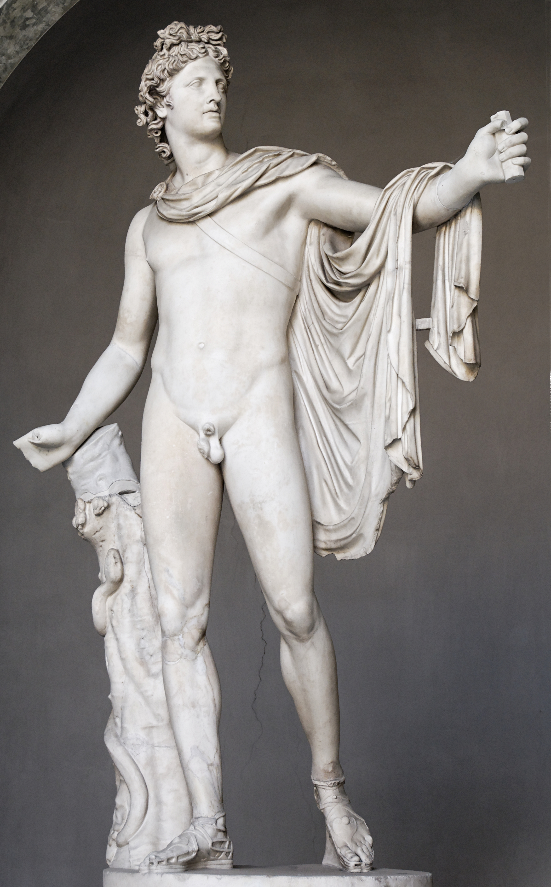
Miremos un fragmento conservado del friso del Partenón. Aquí están representados los efebos-muchachos que cabalgan. Tenían una apariencia externa muy interesante: los efebos se frotaban el cuerpo con aceite de oliva, que se volvía bronceado; cubrían sus cabellos con polvo de plata4, y las cabezas eran plateadas. Llevaban cortos mantos: las clámides. Pero tenían derecho, o mejor dicho, eran honrados con el privilegio de la desnudez. En las concepciones de los antiguos griegos, uno debe avergonzarse de la mala naturaleza, del cuerpo feo: eso es un gran pecado y un vicio. Y cuando un hombre tiene una complexión magnífica, de eso hay que enorgullecerse.
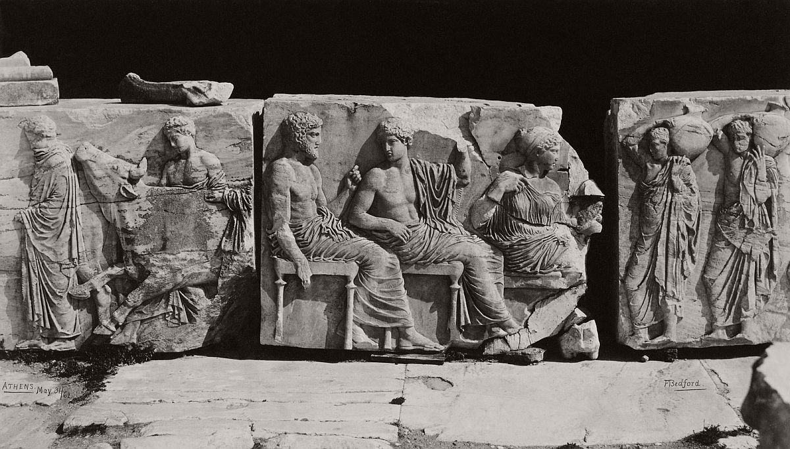
Por eso los efebos fueron honrados con el privilegio de caminar desnudos. Caminaban desnudos y llevaban sobre sí mantos blancos de lana llamados clámides. Los efebos son los jóvenes idealmente desarrollados, de complexión ideal. Ese joven es el objeto principal y el héroe principal de la representación en el arte antiguo.
En todos los efebos hay un rasgo común: se parecen unos a otros. No tienen ninguna diferencia psicológica ni social. Todos pasaban por la misma enseñanza, los mismos entrenamientos. Sobre esto llamaba la atención la cultura pedagógica de la época: sobre la conciencia colectiva, general, ideal de la nación, sobre la integridad que se expresa no solo en la preparación común, universal, democrática, sino también en entrenamientos absolutamente idénticos. La cronología en el mundo antiguo avanza a través de las olimpíadas: una vez cada cuatro años el mundo entero se reúne en la olimpiada y se alinea según modelos, según cánones. Todos se ajustan a determinadas normas: éticas, de comportamiento, físicas, psicológicas. Era la tarea de crear un colectivo físicamente hermoso, pues corresponde al concepto del Logos ideal.
Miremos un retrato de un joven. Es un muchacho, vencedor de las competiciones píticas. Esta escultura es de bronce, hallada en Delfos. Este joven tiene alrededor de catorce años.5 El mérito de este retrato consiste en que es el «yo» que es «nosotros», y el «nosotros» que es «yo». Este joven es el modelo ideal de cómo debe ser un joven. En primer lugar, expresa el ideal étnico de la Antigüedad, al que llamamos convencionalmente belleza antigua. Expresa un ideal: todos deben ser como él. Es el concepto de lo único, de la comunidad espiritual. En segundo lugar, este efebo ideal es el vencedor en el deporte más peligroso: la competición de cuadrigas. Se le ha concedido el honor más alto: se le muestra como el efebo ideal, como el miembro ideal de este colectivo juvenil. Se le presenta como canon.
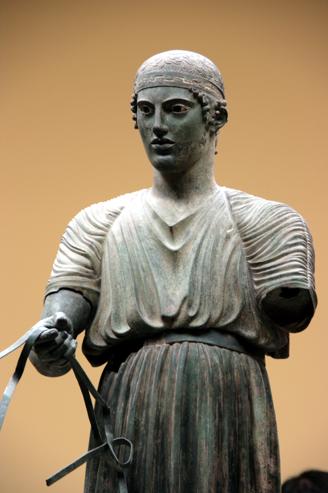
Todos los jóvenes, independientemente de las familias de las que provinieran, pasaban por el mismo sistema de enseñanza, recibían la misma educación. Cuatro años corrían, saltaban y entrenaban, porque la defensa de la polis y la gloria de la polis dependían del nivel que tuviera la población masculina. Pero también estudiaban aritmética y escritura, y además absolutamente todos aprendían música.
Hay también un fragmento auténtico muy raro, único, de la representación de un muchacho-efebo, no un efebo de la tercera etapa, sino un efebo-muchacho, un niño-efebo que toca el instrumento de Apolo: la cítara. Esta cítara es de siete cuerdas. Siete es un número sagrado; siete cuerdas tenía la cítara del dios Apolo, y el dios Apolo, al pasar la mano por la cítara, creaba las consonancias del Logos, del Universo, del Cosmos. Y por eso todos los efebos, todo el ejército de Apolo, tocaba la cítara. Toda la población estaba preparada por igual: musical y físicamente. Por eso, para no quedarse atrás unos respecto a otros, se alinean a través de las olimpíadas. Además de esto, cada hombre estudiaba la historia, es decir, la mitología, cada uno debía estar dispuesto al diálogo, que era un examen de cultura general.
Esto existió muy poco tiempo. En cuanto las polis empezaron a desmoronarse, se desmoronó el sistema polístico de educación. Alejandro Magno estableció un ejército regular con un tiempo de servicio, y todo el sistema de educación de los efebos llegó a su fin. Pero la auténtica Antigüedad está ligada precisamente a este sistema pedagógico, al desarrollo de este tipo de conciencia, a la creación de este sistema de preparación de los jóvenes. Este joven es el objeto principal de la representación en el arte antiguo, sin contar la serie mitológica.
Consideramos precisamente el sistema antiguo porque se expone de un modo extraordinariamente interesante en el arte. Cuando miramos las obras de arte, las vemos, las aceptamos como monumentos autónomos. Pero también se puede mirar de otro modo: intentar comprender qué lado de contenido hay detrás del arte antiguo, y resulta ser extraordinariamente informativo.
Roma vive en otro sistema de valores, en otro sistema de educación, pero como esto no se refleja de ningún modo en su arte, no nos detendremos en ello.
En una época más tardía, en la época de la formación del helenismo, comienza a formarse la cultura helenística.
En la dura fórmula de Aristóteles sobre quién tiene derecho a ser representado en el arte, se dice que no puede ser un niño ni un anciano. Como escribía Aristóteles, «el niño es un infrahombre, y el anciano no es un hombre»6. Solo el joven, solo el efebo, solo la luz de la nación tiene derecho a ser representado en el arte.
El helenismo se aparta de estas reglas aristotélicas. En los helenos, sobre todo en el helenismo alejandrino, es característica la aparición no solo de las bases de género en el arte, sino también de representaciones de ancianos y de niños. La aparición de ancianos y de niños en el arte, sobre todo en el arte de Alejandría, está relacionada con que los alejandrinos son por principio antiheroicos. Por ejemplo, representan a Zeus como un bebé barrigón. Está sentado, y una ninfa —que es su nodriza, su educadora— sostiene el cuerno de la abundancia como un chupete, y él lo lame. ¡Qué humillación para una persona como Zeus! En la mitología es terrible, hermoso, es un toro, y aquí es simplemente un bebé regordete al que dan de comer. Aquí hay una inversión, una inversión del rostro heroico. Por eso aquí hay un concepto completamente distinto del hombre. Es una novela semipueril sobre seminiños. La atención se acentúa en el desarrollo de las emociones, de los sentimientos en la edad adolescente, semipueril. Precisamente Alejandría engendra el mundo infantil en el arte.
Alejandría proveyó de escultura de la infancia a Europa hasta el día de hoy. Nuestros jardines de infancia están todos provistos por Alejandría. En todos ellos hay copias de las estatuas alejandrinas. Al momento de la edad solo añadimos el pionero con el tambor y el cuerno. Así que estamos provistos por Alejandría, y un pequeño paso hemos dado por nosotros mismos para pasar luego a la muchacha con el remo. Nuestra línea está construida de modo impecable.
Para el género infantil alejandrino es característico un nuevo culto, una nueva mitología, la mitología de la diosa Higía. Nació la diosa de la pediatría, nació la ciencia de la pediatría. A Asclepio, el dios de la medicina, le nació una hija en la vejez. Se llamaba Higía, y era la protectora de los niños y de la pediatría.7 Junto a los templos de la diosa Higía, en los jardines de Higía, estos niños comenzaron a ser representados. Sobre todo hay allí muchos patos y gansos alrededor de los niños.
Todo esto es simplemente la representación de un sistema de edad determinado. Aquí no hay una tarea más profunda. Son simplemente niños regordetes; luego el siglo XVIII los quiso mucho y los representaba en forma de amores. Y les devolvieron de nuevo su infancia feliz en nuestros jardines de infancia. Vencieron a todos, resistieron a todos en el arte universal.
Pasemos ahora a una caracterización muy interesante de este problema dentro de la cultura medieval. Este problema está relacionado exclusivamente con la pintura religiosa, con el arte religioso tanto de los sistemas cristianos orientales (Bizancio, los Balcanes, Rusia) como de los sistemas occidentales, latinos.
Allí y aquí: arquitectura de templos. En Rusia, las ciudades incluso se construían por principio de madera. Existe una respuesta muy clara a la pregunta de por qué las iglesias se construían de piedra y las ciudades de madera. Porque la madera es el material natural de Rusia. Conserva admirablemente el calor.
Pero aparece la posibilidad de construir palacios de piedra. Por cierto, los príncipes de Vladímir bien podían haberse construido palacios de piedra. Existe una diferencia colosal entre la piedra y la madera: material eterno y material temporal. En Occidente esa diferencia se subrayaba con la escala de las casas apretadamente alineadas, apiñadas, apretadas, como rebaño. Podemos observarlo en el Báltico. No es solo la estrechez de la tierra, sino también una estrechez por principio. Son hermanos, es el rebaño que se encuentra en torno a una única catedral, que representa el mundo de Dios. Es un contraste por principio entre el tiempo y la eternidad, entre el ser divino y la existencia humana, vital. Se expresa magníficamente a través del material, a través de los tejidos. Es arquitectura religiosa, es eterna, y ha llegado hasta nosotros.
La construcción de piedra blanca, la pintura y la escultura son cosas religiosas, porque están vinculadas al culto religioso. En Occidente la pintura se desarrolla menos; se desarrolla más la escultura. A partir del siglo IX se forma un sistema como el iconostasio8, que da la posibilidad de desarrollar la pintura medieval de caballete. Esta pintura está vinculada a cánones completamente determinados, a temas determinados. Y parecería que aquí no hay lugar para los niños, un tema tan puramente cotidiano. Pero resulta que también aquí hay un bebé.
Sabemos quién es. El bebé se representa en esencia uno solo: es Cristo. Aquí la representación de los niños está vinculada básicamente a la superposición sobre la imagen de Cristo. Pero existen también iconos hagiográficos: el icono de la vida de Nicolás, el icono de la vida de Jorge. Y en los iconos hagiográficos hay representaciones de santos en la infancia.
La representación del niño Cristo es siempre la misma. La Madre de Dios lo sostiene en brazos, y él está sentado con el rollo de los destinos humanos en las manos. Él señala el camino, él adoctrina.
¿Puede Cristo ser un niño o no? Por supuesto que no. Es decir, el pensamiento de la Edad Media comprende este camino de formación, de desarrollo de los niños dialécticamente. Igual que distingue el arte sacro y el religioso, distingue al niño y al Dios-niño.
Los niños no entran en el arte porque no hay lugar para ellos en el arte, mientras que Dios entra como niño, pero niño no puede ser; por eso en calidad de niño se le muestra como una personalidad absolutamente revelada, establecida. No puede ser un bebé que camina, que gatea a cuatro patas, no puede pedir el orinal. Y con independencia del canon de la Madre de Dios que se tome, siempre hay una dualidad, una distinción clara: de este lado y del otro lado, el mundo de los bebés, que no tiene por qué ser representado en el arte, y el mundo del Dios-niño, que no puede ser un niño.
Hay además un notable icono de Nóvgorod. Se llama «La Presentación de la Virgen en el Templo». El tema es muy raro para el iconostasio ruso, pero en Nóvgorod bastante difundido. En este icono están representados Ana y Joaquín, los padres de María, que llevan a la Madre de Dios al templo, ante el sacerdote, y la entregan en manos del sumo sacerdote. Existe además el cuadro de Tiziano «La Presentación de la Virgen en el Templo». Y este es un icono de Nóvgorod.
María fue al templo por sí misma, fue su voluntad. Ana y Joaquín, al recibirla como hija, eran ya personas profundamente mayores; ella era una niña implorada a Dios. Ella, según la literatura histórica o hagiográfica, fue implorada, Dios la dio, y los padres la entregan a Dios en el templo.
El segundo nivel del icono es siempre el desarrollo del tiempo, es lo que se llama «pasó el tiempo» y se muestra mediante un calendario arrancable. Pero siempre el segundo nivel del icono es también el contenido principal del icono, allí se muestra la parte central del icono. El icono tiene una división tripartita, como el templo, y la segunda parte es aquello por lo que el icono ha sido pintado. Si hay representación solo de la figura del santo, el rostro se coloca siempre en el segundo nivel. Es el objeto principal de la representación.
Y aquí está la Anunciación. Aquí está representado aquello por lo que la Madre de Dios ha sido introducida en el templo, es decir, su destino, su fin. Y ella está sentada en el templo, pues la Anunciación ocurre en el templo, adonde fue entregada para su educación.
Es decir, ¿cómo se muestra a María? Se la muestra igual que a Cristo. Escala muy pequeña. Está vestida exactamente igual que Ana, ya con sus dos colores: azul oscuro y cereza oscuro. Son los colores clásicos de la Madre de Dios. Se la muestra con su gesto habitual: ella se entrega. Pero este gesto significa mucho más. En este caso este gesto significa una petición de intercesión. Su función principal, suprema, en el Juicio Final será la intercesión y la súplica. Por eso cuando se la muestra después de haber cumplido su misión, se la muestra con ese mismo gesto.
Aquí se la muestra como niña, pero al mismo tiempo se la representa ya en lo que es su misión suprema, su cumplimiento supremo.
Hay que saber qué es la dialéctica del desarrollo para, en textos tan responsables como un icono hagiográfico o un icono festivo, mostrar así a un niño: como la personalidad de un hombre adulto, consumada, devenida. Cuando se trata del mesianismo, tales figuras se presentan en una forma completamente acabada.
Pero este tema solo puede seguirse de verdad a partir del momento en que comienza a formarse la pintura de caballete, la pintura profana, cuando la pintura adquiere la división en géneros y especies. Y esa es la época del Renacimiento.
Aparece la multiplicidad de aspectos. Empecemos por el cuadro de Rafael «La Madonna Sixtina», porque da un aspecto completamente nuevo y una comprensión completamente nueva del tema medieval tradicional de la Madre de Dios con el niño en brazos.
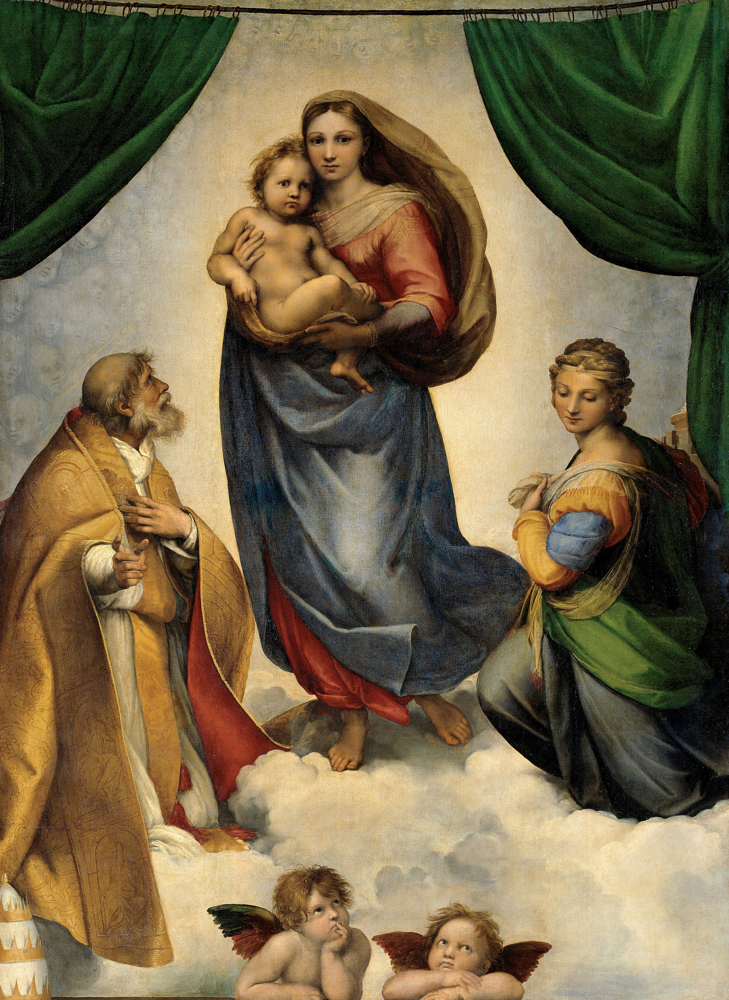
El contenido principal de la ética medieval, el héroe principal del arte medieval, es el varón, el esposo, el guerrero. El héroe principal de la Edad Media es Cristo. Es el tema del sufrimiento, el tema del cumplimiento, del alto heroísmo moral.
El Renacimiento, en cambio, se instala en lo espiritual de un modo mucho más confortable. El tema principal del Renacimiento es el tema del amor y de la creación. El héroe principal no es el varón, sino la mujer, y Cristo es trasladado a la posición de niño. Cuando se le representa con su madre, se le representa como niño. El culto de la mujer es el culto rector del Renacimiento. La filosofía de Ficino construye en torno a la mujer a todos los personajes centrales del mundo. Es el eje espiritual central del Renacimiento.
Recordemos que Dante sitúa a Beatriz por encima de sí. Y si al infierno lo conduce Virgilio, a la vida terrenal lo conduce Beatriz9.
Para el Renacimiento, la imagen de la dama hermosa y la imagen de la Madre de Dios se funden entre sí, constituyen cierta unidad, igual que la imagen de Cristo es una con la imagen del niño.
En todos sus cuadros Rafael da a Cristo como niño, pero en la «Madonna Sixtina» da una división, una contraposición muy tajante. Vuelve de nuevo a esa división, mientras que el Renacimiento tiende a unirlo todo. Este cuadro fue pintado en 151310, unos años antes de su muerte. Rafael revisa las nuevas ideas que el Renacimiento propone en el siglo XV, en la época del quattrocento. Después ellas mismas renuncian a sí mismas. Esto ocurre muy a menudo: cuando una cultura se lanza hacia adelante, después da un giro tajante, se revisa a sí misma tajantemente.
Hacia 1520 —punto fatal, umbral del Renacimiento— comienza la revisión de estas posiciones, y en Rafael se da en el contraste de lo terrenal y lo celestial. Se da no en la unión de la dama hermosa y la madonna, sino en el contraste de lo terrenal y lo celestial. Bárbara es para él la imagen de lo terrenal, y la madonna es la imagen de lo celestial. Por eso la madonna se da como aparición, como visión. Por eso Bárbara desciende, y la madonna permanece.
Y por eso ella no tiene contacto con nosotros. Sixto mira a la madonna, y ella no lo mira a él. Bárbara mira a la tierra, los niños miran hacia arriba, y ella ni siquiera tiene contacto con nosotros: sale del espacio físico, del espacio histórico. Ella va, ella viene. Es una dimensión completamente particular. Aquí hay un espacio de nivel terrenal y un espacio de nivel místico.
Por estas dos líneas podemos considerar el problema del retrato infantil, porque ya se manifiesta en varios sistemas distintos.
Aquí vemos la contraposición del niño Cristo y de los niños que están abajo. Los niños que están abajo permanecen en la infancia. Y en él ya existe la conciencia de su deber y de su responsabilidad, incluso cierto horror y pesadilla ante ese deber, ante esa responsabilidad.
Este cuadro lo consideramos primero por ser el más demostrativo en este sentido, muy dramático en su dualismo, en su no-unidad, que considera una misma cuestión desde dos posiciones distintas.
Pero esto no es característico solo de Italia. Hay un cuadro interesante del pintor alemán Grünewald11, contemporáneo de Rafael. Primero consideremos la «Anunciación», y luego la «Madre de Dios con el niño».
Grünewald es contemporáneo de Rafael. Para él existía una verdad divina, y existía el mundo, y además el mundo no entraba en el sistema de lo divino. Aquí todo está muy vinculado, muy conjugado.
La mujer que vemos en el cuadro de Grünewald está simplemente desconcertada ante aquel torbellino, ante la sentencia que se dirige hacia ella. Grünewald representa a una alemana blanquita. Tiene los cabellos sueltos, rostro redondeado, ojos bajos: no está preparada para esto, se ha echado atrás, no tiene deseo de ocuparse del mesianismo. Y el arcángel Gabriel irrumpe como un torbellino. Además, Grünewald lo pinta como un incendio, en la combinación de colores rojo oscuro y amarillo: es como fuego. Él le dicta sentencia: dice que el hombre no es dueño de su destino, es la historia, las circunstancias lo ponen ante cuestiones para las que no está preparado. La llama a tomar una decisión; ella no puede, pero aun así se ve obligada a hacerlo.
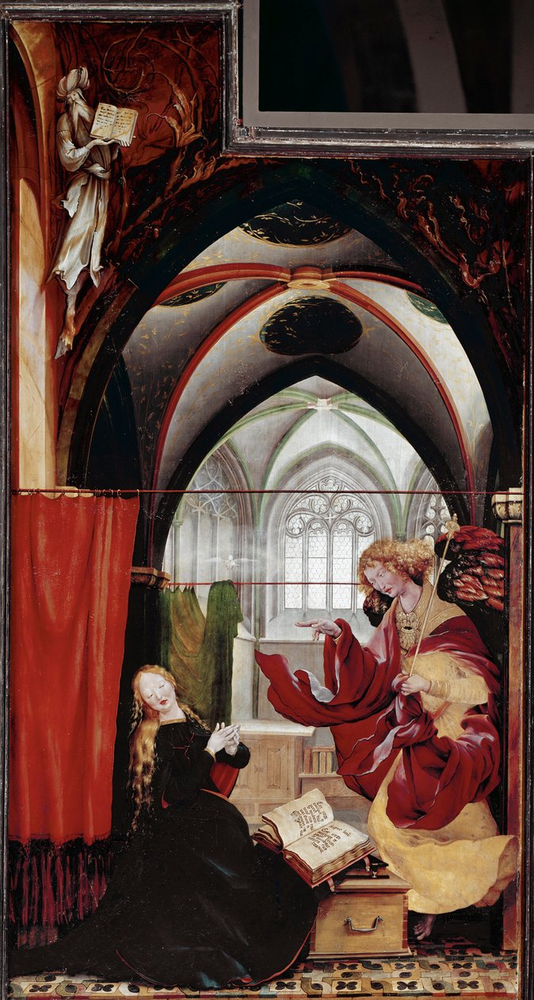
Aquí se sigue la línea trágica del ser. Es evidente, se manifiesta. Y para la conciencia compleja y trágica del Renacimiento es muy esencial.
Por eso, cuando tiene un hijo, sabe que lo sostiene en brazos por primera y por última vez. Aquí hay también una olla y una tina para el baño. Pero el contenido aquí es exactamente el mismo que en la «Madonna Sixtina»: ella no quería esto, estaba condenada a ello, esta decisión viene de lo alto hacia ella, y sostiene al niño en sus brazos por primera y por última vez.
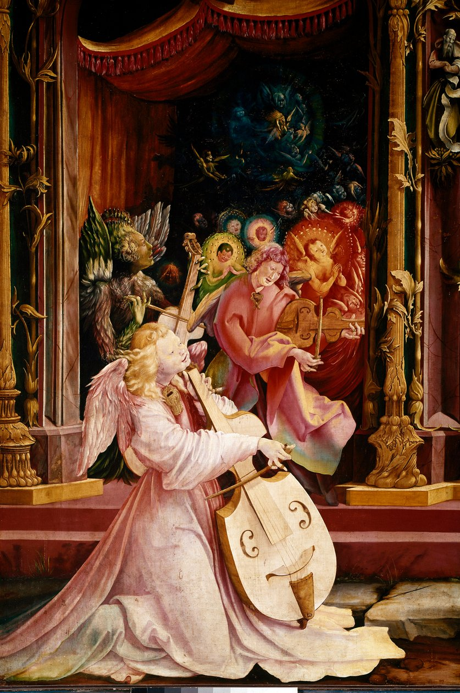
Por eso aquí todo va a través de una tensión excesiva, de emociones excesivas. Y el niño se muestra como un niño que aún no comprende.
Aquí aparece una particularidad muy interesante, se podría decir de director, calculada ya no solo para el tiempo en que esto fue creado, sino también para el espectador. Cuando el Renacimiento comienza a representar al niño, empieza a explotar la infancia. Los niños se muestran regordetes, tiernos, simpáticos e indefensos, pero el espectador sabe a qué está condenado ese niño. Cuando la Madre de Dios lleva a ese niño en brazos, ya sabemos a qué lo lleva. El corazón se desgarra.
Es muy fácil explotar al niño. Perov representó a los niños que llevan un trineo por un camino helado. Y así, de este modo, a impactar sobre el espectador a través de los niños comienza ya en la época del Renacimiento.
Por eso Cristo se aparece al espectador como niño, y no en su fuerza suprema. Se aparece como un bebé indefenso y regordete, que está condenado en lo sucesivo —el espectador lo sabe— al sufrimiento. Él, y su madre.
Grünewald pone al espectador cara a cara ante esta dramaturgia. El espectador se convierte en participante activo y en un personaje adicional.
Rafael, igual que Grünewald, es en este sentido un director muy sutil. Empieza a pintar la indefensión infantil. No se plantea como tarea mostrar la psicología de la edad infantil o principios particulares, no. Muestra la indefensión infantil. El niño depende por completo de la madre, es inseparable de ella. Y el espectador sabe qué le amenaza.
En este sentido son muy interesantes sus cuadros «Madonna en el verde», «Madonna Alba»12. Toda esta serie de Rafael es muy interesante. Ahora no podemos valorar la dramaturgia de esta obra, porque no somos católicos del siglo XVI. Por cierto, precisamente en el siglo XVI se quemó en las hogueras a más personas que en el XII, lo cual es perfectamente conocido por las estadísticas. Porque en el siglo XII no había caza de brujas, y en el XVI sí la había.
Los católicos de esta época estaban organizados nerviosamente de un modo algo distinto al nuestro. Ante nosotros hay un niño que está de puntillas. Es de gordura media, es decir, todos los sentimientos maternales están puestos aquí sin resto: está bien alimentado, tiene las mejillas colgantes. Esto es la indefensión ante el mundo; aún no tiene ninguna forma de protección. Y juega con la cruz. Hay que comprender qué significa esto para una persona religiosa. A nosotros nos da igual, pero es una cosa significativa. Pero no la vemos como la veía el hombre del siglo XVI.
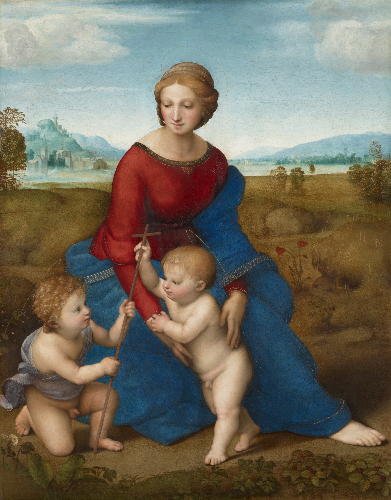
Rafael era un psicólogo muy sutil y un director muy sutil. Juega con maestría sobre la dramaturgia. En él la indefensión juega con el instrumento de su propio tormento: la cruz.
Lo mismo en Grünewald: aquí está la olla, aquí la tina, y está claro que la madre sostiene al niño el primer y último segundo de su vida. Aquí no hay etapas de camino, no hay etapas de desarrollo. Hay el hecho de la Natividad y el hecho de la aparición.
Todavía es un bebé del todo; no puede beber ni comer solo, y ya tiene la cruz en las manos. Para esa época es toda una gran dramaturgia. Ya comienza el uso de la cruz y el uso de la infancia, de su sinsentido, de su indefensión. Aparece la representación del contraste con la cruel realidad del mundo.
Leonardo da Vinci (en lo esencial la línea de desarrollo de este género va por este camino) ocupa aquí un lugar absolutamente particular, porque era psicólogo y escribió tratados de psicología. Se aproxima a este tema de un modo único para la época del Renacimiento. Es en general un pintor extraordinario, muy interesante desde el punto de vista de los procesos de la psicología y de la conciencia del hombre en su conjunto. Por ejemplo, su «Última cena» es extraordinariamente interesante precisamente como investigación psicológica.
Pero su «Madonna Benois»13 no es en absoluto menos interesante que la «Última cena». ¿Por qué? Porque aquí en Leonardo da Vinci el momento del contenido religioso como tal desaparece. En Rafael ese contenido religioso está introducido en otros sistemas, con otros héroes. En Leonardo este tema —de la explotación de los niños— está completamente desprovisto de todo halo religioso, porque él tenía sus propias opiniones acerca de la religión cristiana. Leonardo es el único que intenta mostrar precisamente el trabajo de la conciencia infantil y el sistema de coordinación de la conciencia y del movimiento en una edad determinada. Y lo muestra igual que lo muestran los pedagogos contemporáneos: a través del juego.
Toma como base del tema el juego, y ese juego se convierte en motor y en provocación psicológica. Muestra la unidad de los procesos de desarrollo: entre el movimiento, la motricidad del niño y su conciencia. Es un juego muy simple: la madre juega con el niño con una florecilla. Le da esa florecilla, y él debe, por así decirlo, arrancarla o atraparla. Para su edad es un juego complejo, que exige la movilización de todas sus fuerzas, y por eso con una mano sujeta la mano de la madre para que no vaya de un lado a otro, es decir, la fija estáticamente, y con la otra hace un gancho y atrapa la flor. Esto se hace a los cuatro o cinco meses. Sus ojos están desviados; todos sus recursos espirituales están entregados sin resto a este asunto. En cambio, tiene peso en exceso: es más un fenómeno físico que un ser que actúa o que actúa espiritualmente. Leonardo se manifiesta aquí como el ateo más desesperado: ¡mostrar al niño Cristo con el nimbo sobre la cabeza como un niño cualquiera, que no puede ni levantar la florecilla con el dedo!
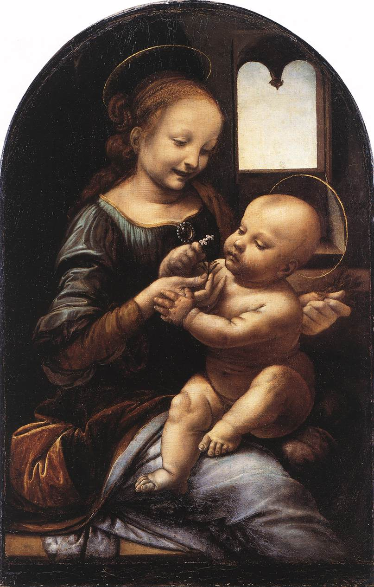
Pero sin embargo Leonardo pintó este cuadro. Dio a Cristo un exceso de principio físico: las rodillas, las manos. Es un cuerpo humano, y su lado espiritual está en la fase inicial del desarrollo. Leonardo muestra una etapa del desarrollo, pero eso solo lo hace él. Muestra algunas etapas iniciales de la formación de la personalidad a través del juego. Las personas que no han tenido hijos saben de ellos por alguna razón más. Leonardo conocía perfectamente la pedagogía infantil.
Así pues, la primera época que hemos considerado: el Renacimiento. Aquí se desarrolla el tema más directo, que yace en la superficie, vinculado al problema tradicional que viene aún de la Edad Media. Se va delimitando la indefensión infantil.
El segundo tema que aparece en la línea argumental de la época del Renacimiento es la representación de la Sagrada Familia. En la Sagrada Familia conviene detenerse especialmente.
¿Cuál es el contenido del cuadro «Sagrada Familia»? Es todo un género. Tomemos el cuadro de Tiziano que representa a la Sagrada Familia. El cuadro se llama «Madonna con cerezas».14 El niño que está abajo es Juan el Bautista. Y para que no lo confundan con nadie, le dieron una crucecita en las manos. El público comprende de quién se trata, quién es ese héroe.
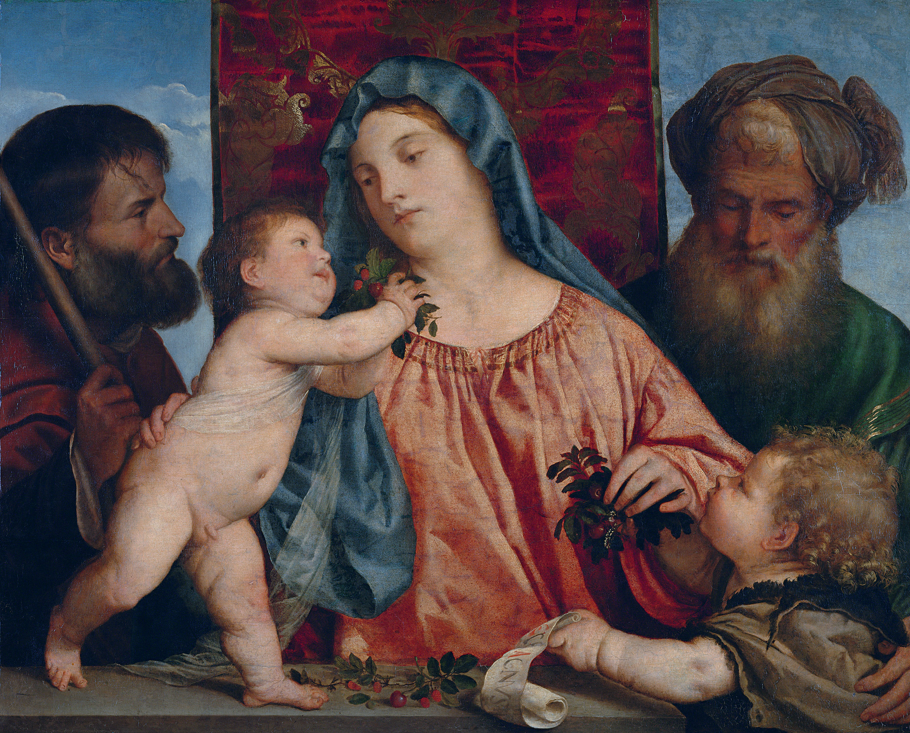
Tiziano pone en correspondencia la representación física y la de contenido, porque en Rafael lo físico y lo de contenido muchas veces aún divergen. Pinta al niño Cristo en brazos de la madre con la cruz, pero el contenido es completamente otro. Y la escuela de Tiziano pinta lo de contenido y lo físico de modo homogéneo.
He aquí el cuadro de Giorgione «Madonna Castelfranco». Aquí la madonna está representada con el niño, los santos Liberalio y Francisco. El contenido es muy interesante. Aquí es interesante considerar a la madonna con el niño, porque en Giorgione ese niño está identificado física y conceptualmente con una edad determinada. Es la representación real de una edad determinada. No está revelado, como en Leonardo, y no es dramaturgia, como en los pintores del quattrocento (eso son también Botticelli, no solo Leonardo, y Filippino Lippi). Les es propia una dramaturgia tajante, mientras que aquí es interesante el momento de hacer coincidir lo físico y lo de contenido, lo psíquico por edad y lo físico. Está sentada la madre, ella está como inmersa en lo suyo, y el niño está ocupado consigo mismo. La madre lo sostiene en el brazo, y la ocupación de él es la más trivial: examina algo, se entretiene.
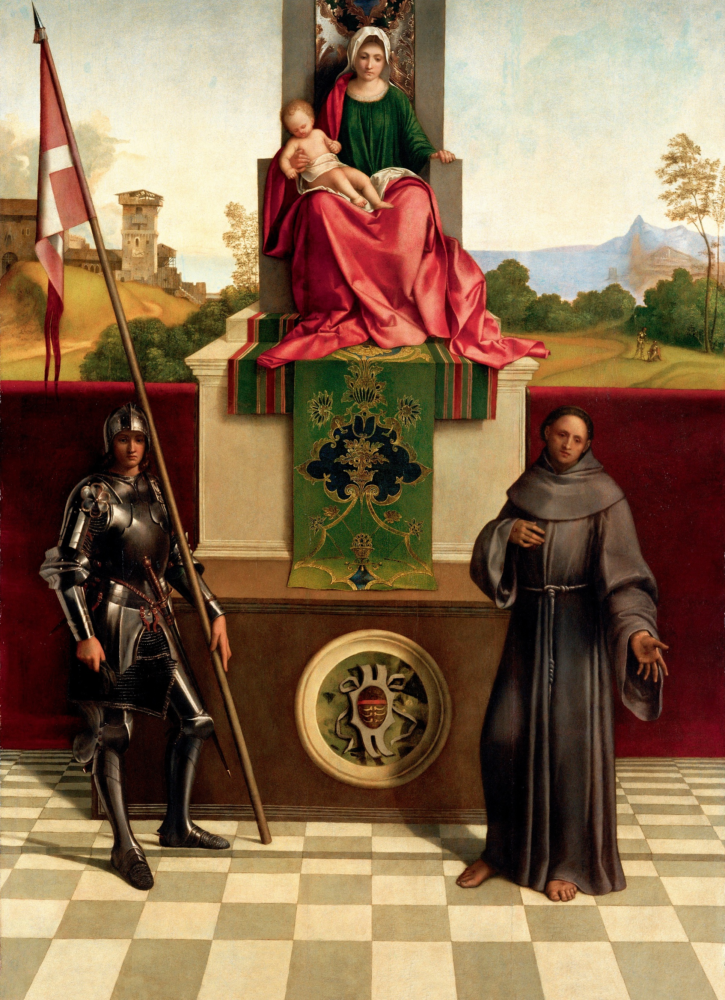
A todos estos niños los entretenían; ellos no pueden entretenerse solos. Los niños se muestran en el momento del entretenimiento, porque no son autosuficientes. Autosuficiencia interior no tienen; por eso obligatoriamente debe haber una señal desde fuera para concentrarse y enfocar la atención.
Y he aquí otra Sagrada Familia, por principio distinta. Es la «Sagrada Familia» de El Greco. La Madre de Dios muestra al niño15 a su madre Ana y a su padre Joaquín. Ven cómo la abuela levanta con cuidado el pañal y examina con cautela al niño, aunque en El Greco el pensamiento vinculado a la Sagrada Familia es otro. Tiziano y El Greco son pintores que viven al mismo tiempo, pero completamente distintos.
¿Qué pinta Tiziano? Tiziano pinta a su brillante amigo Aretino16, el poeta veneciano, personalidad muy famosa: memorialista, político. Junto a Aretino pinta a su hija, una mujer joven, morena, rubicunda, hermosa, y en los brazos de la hija su hijo. Tiziano pinta edades, generaciones. En la «Anunciación» se mostraba el tiempo vertical, mesiánico. Y aquí se muestra el tiempo horizontal, histórico, el tiempo de la formación de la familia, del desarrollo de la familia.
Este es, quizá, el momento más interesante: un tema nuevo que aparece en la época del Renacimiento. Está vinculado precisamente con la representación de los niños, y es el tema de la familia. Y este tema de la familia va precisamente a través de las Sagradas Familias. Por ejemplo, abuelo, madre y nieto.
El concepto de familia es un concepto muy interesante para esa época. Sabemos que Sviatopolk el Maldito no tuvo escrúpulos en matar a dos de sus hermanos: Boris y Gleb. Cierto, les hizo un gran favor, ya que eran personas mediocres, y así se convirtieron en santos. Como se dice, ¿quién no sacrificaría su vida por semejante inmortalidad y gloria eterna? Pero aun así, Sviatopolk el Maldito era su hermano carnal, lo que no habla muy bien de él. El feudalismo no tenía una disposición hacia la familia. Podía tener una disposición hacia el libro de heráldica, pero no había disposición hacia la familia. Y cuando los caballeros corren con la visera bajada, se sabe que el príncipe Juan podía acabar con su hermano Ricardo Corazón de León en dos segundos sin pestañear. Es decir, si había enemistad, era una enemistad intrafamiliar. Era muy característica de Italia entre otros, y en general de la Edad Media.
¿Cuándo comienzan a consolidarse las familias? Cuando la familia se convierte en base social, en célula. En una familia así los niños son muy importantes: son su futuro. Y entonces los niños comienzan a ser representados no por sí mismos, como personalidades, sino como ontología, como forma ontológica.
El amigo de Tiziano, Aretino, había sido en otro tiempo soldado fugitivo y presidiario, pero era muy hábil y obtuvo la nobleza. Y he aquí que se fija a sí mismo en semejante cuadro ontológico, junto a la Sagrada Familia.
El cuadro de El Greco es completamente distinto por su contenido. Aquí no hay esa realidad que hay en Tiziano. Este cuadro está construido sobre los tipos de El Greco, y no sobre retratos de contemporáneos. Es un tipo peculiar, vertical, alargado, de hombre, extraordinariamente rico en contenido espiritual. No extrovertido, como en Tiziano, sino al contrario: es un personaje introvertido, inmerso en sí mismo. Y al mismo tiempo el niño en brazos de la joven es una cosa muy importante. ¡Cómo levanta con dos deditos los pañales y lo mira!
Un momento interesante que aparece en El Greco: comienza a representarlos como fuente de luz en general. En el cuadro «Natividad» el niño arde más brillante que la estrella.17 La idea es comprensible: se ha alzado la estrella, ha nacido el rey de reyes. Pero aquí hay un sentido más: la importancia de la continuación del linaje, es otra cadena, otra misión. Comienzan a formarse sistemas familiares, inconmovibles. Precisamente por eso el tema de la Sagrada Familia adquiere una importancia tan grande. Y entonces se comienza a representar a los niños en la familia.
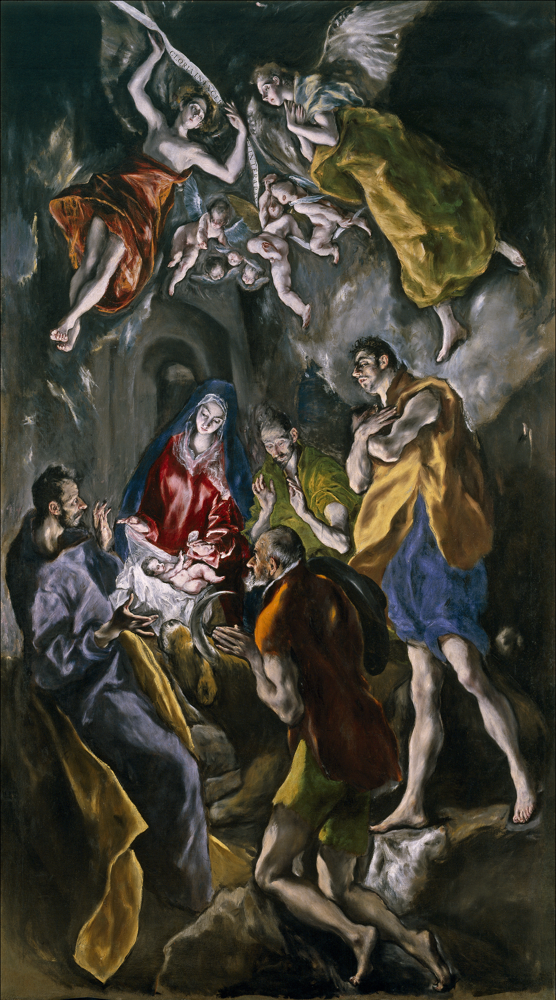
He aquí, por ejemplo, dos cuadros de este tipo, cuando los niños aún por sí mismos no tienen significado, pero lo tienen en la familia. Son cuadros muy distintos y al mismo tiempo muy parecidos. Es un pintor neerlandés: Hugo van der Goes. El cuadro se llama «El altar Portinari». Portinari es un italiano que trabajó en los Países Bajos18 y dirigía las oficinas de los Médici. Y encarga a Hugo van der Goes un retrato familiar. Este cuadro está construido según un canon determinado que se puede ver también en Tiziano, por ejemplo en su cuadro «Madonna Pesaro». Aquí se abre todo un género en el que los niños son necesarios.
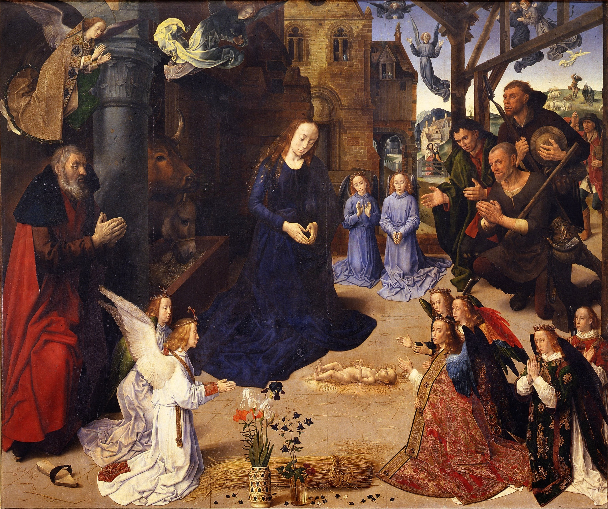
Normalmente estos géneros familiares incluyen la representación de los santos patronos: son los que protegen desde fuera esta casa, aquellos en quienes se puede confiar. Este Portinari en el conjunto no se corta: toma a los primeros santos: Tomás y Antonio, María Magdalena y Margarita. Son poderosos, están representados como se acostumbraba representar a los santos. Es una representación extraordinaria, ocupan toda la escala del mundo. Esta familia es solo una pequeña parte, situada en su regazo, pero que cree en ellos, que confía en ellos.
A la familia del comitente la componen madame Portinari, junto a ella una niña, y dos niños que están detrás de él. Aquí sobre los niños se extiende la influencia de los adultos y de los santos. Es una peculiar densidad espiritual. Es un cerramiento, es un mundo escondido hacia dentro: mi secreto lo conocen yo y Dios, tú no puedes conocerlo. Estamos unidos como familia, pero al mismo tiempo permanezco en mí como personalidad.
Hugo van der Goes pinta retratos infantiles de un modo muy realista. El retrato neerlandés es de un nivel mucho más alto que el italiano, porque los italianos lo arrastran todo el tiempo hacia el heroísmo y la teatralidad. Son muy grandes humanistas respecto al hombre, aman mucho la relación epitética con el hombre; en ellos cada hombre aparece con signo de exclamación, como el más grande, magnífico. Tienen el afán de intensificar, de forzar las cualidades de la personalidad humana.
Y en los Países Bajos, al contrario, la atracción hacia la reflexión. El retrato neerlandés es mucho más reflexivo que el italiano. Los italianos no tienen complejos de inferioridad, mientras que en el retrato neerlandés hay sensación de la propia debilidad, hay intento de mirarse desde fuera, análisis de la propia conciencia.
Por eso Hugo van der Goes es un retratista magnífico: destaca no solo al hombre, sino también los pliegues infantiles hinchados sobre las cejas, para que tengamos la sensación de que estos niños tienen signo de pensamiento, signo de alguna profunda vida espiritual.
Pero lo más interesante en este cuadro son, por supuesto, no los retratos de los niños, que ahora destacamos especialmente, sino la idea de la familia, que es la que engendra tal representación intensificada de los niños en el arte.
Y he aquí el cuadro de Tiziano que se llama «Madonna Pesaro». Es lo mismo que el «Altar Portinari». Solo que en el «Altar Portinari» los santos son de escala enorme, y las personas comunes, mucho menores. Los italianos son público teatral; para ellos la madonna es accesible: se puede subir a ella por las escaleras, hablar con ella. En particular, se puede hablar con San Pedro, que representa simplemente la casa Pesaro. Y los santos son de la misma magnitud que las personas comunes. Por eso la madonna no es solo patrona: ella es de su familia. Los neerlandeses no lo mostrarán así. Y aquí está representada una familia que incluye a la madonna y, naturalmente, a esa familia le corresponden niños.
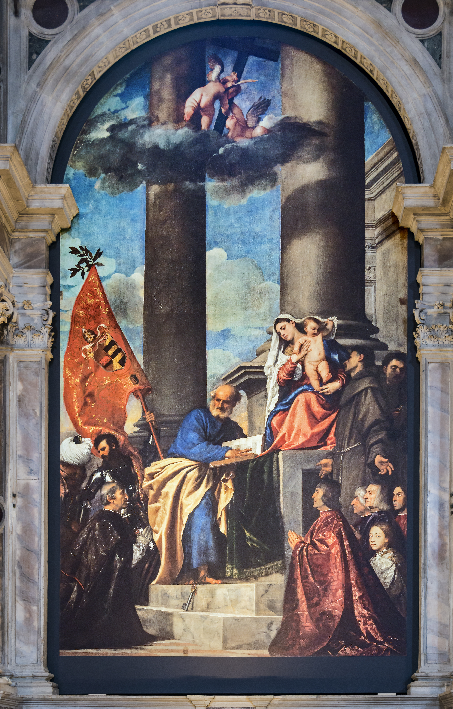
En fin, la tercera línea en el desarrollo de la imagen infantil. Las dos primeras son el juego sobre la indefensión del niño en el arte y la investigación de la familia. La tercera línea es la representación del niño como personalidad. Precisamente del niño, y no del hombre adulto.
Tomemos la obra del pintor neerlandés Pieter Brueghel el Viejo que se llama «Juegos de niños». Este cuadro es muy ampliamente conocido, y cuando en algún lugar se ocupan de la representación de los niños, esta obra figura en primer lugar, porque aquí hay de qué asombrarse: Pieter Brueghel reunió la lista de todos los juegos infantiles que existían en su tiempo, y mostró todos esos juegos. Es increíble.
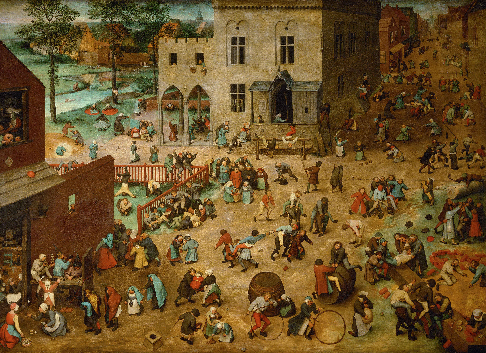
Después se puede aducir también esta comparación: ¿qué se ha añadido a los juegos infantiles desde el momento en que los representó el pintor? Y aquí nos vemos obligados a sacar una conclusión triste para nosotros: igual que nada se ha añadido a la escultura helenística, nada se ha añadido a los juegos infantiles. Todo esto se desarrolla mal.
Pero el pintor no pintó este cuadro para dar luego a los científicos material para el estudio de los juegos infantiles, porque el propio concepto de «juego» para él es otro. Este cuadro tiene su pareja, que se llama «Proverbios y refranes flamencos». Es un díptico: dos cuadros semejantes.19
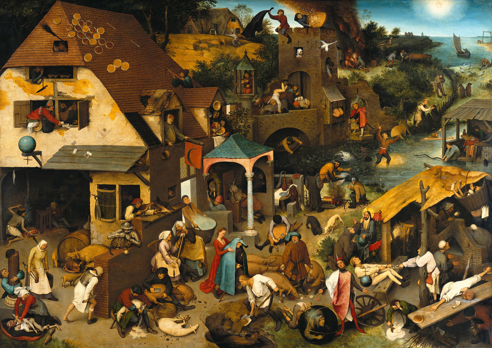
«Proverbios y refranes flamencos» son los juegos que juegan los adultos. Y los juegos infantiles son los juegos que juegan los niños. Y bien: si consideramos los juegos que juegan los adultos y los juegos que juegan los niños, se verá que niños y adultos juegan a los mismos juegos.
La palabra «juego» para Pieter Brueghel el Viejo es idéntica a la palabra «actividad». El juego es precisamente una actividad organizada de un modo determinado. «Proverbios y refranes flamencos» es la actividad de los adultos.
Pieter Brueghel el Viejo afirmaba una idea asombrosa para la pedagogía moderna: el adulto se diferencia del niño por la cantidad de años vividos, pero no saca ninguna conclusión de la experiencia de la vida; es una especie de estática psíquica, la vida del hombre es en principio sin sentido. Pieter Brueghel es pesimista, no se fía del hombre, no cree en el hombre. No es porque fuera malo o ajeno a nosotros ideológica o espiritualmente, sino porque tal punto de vista también existía y, en cierto sentido, tenía derecho a existir.
Cuando los héroes de la cultura del siglo XX, tan expansivos y tan extravagantes como Apollinaire20, es decir, las personas que crearon la sociedad dadá, publicaron su manifiesto, Pieter Brueghel podría haberlo firmado como primer autor, porque a través de ese manifiesto tanto Brueghel como El Bosco pueden leerse de un modo extraordinariamente interesante.
Tzara escribía en el texto del manifiesto dadá: los adultos toda la vida dicen solo una cosa: un sonido infantil sin sentido, no aprenden nada más, juegan a juegos en los que no calculan las consecuencias de esos juegos, exactamente igual que el niño, al blandir y golpear con un palo, no se da cuenta de que puede matar a un hombre, no responde por esa acción en su juego. Eso es la actividad como tal. También escribe que Inglaterra perdió en los años de la Primera Guerra Mundial a toda la intelligentsia. ¿Acaso esa guerra es para los ingleses igual a las pérdidas que sufrieron? No, por supuesto, es un sinsentido. Esto entró en el programa del mundo visible, del absurdo visible, del mundo privado de una conexión lógica visible.
Este mismo pensamiento era muy característico de la conciencia de la intelligentsia holandesa del siglo XVI21. Tenían para ello fundamentos muy sólidos, exactamente igual que la intelligentsia después de la Primera Guerra Mundial y después de la Segunda Guerra Mundial. ¿Hasta qué punto la actividad del hombre es equivalente a los resultados de esa actividad?
En los cuadros de Pieter Brueghel el Viejo el mundo aparece como acciones puntuales, y los adultos-niños están vinculados a la actividad que realizan en ese momento. En esa actividad no tienen pasado, no tienen futuro. Es la chueca, la pídola, el saltar unos sobre otros. Es el juego como tal. Es una actividad autosuficiente, no calculada para las consecuencias.
Toda la composición está dividida en elementos separados solo porque no ve la conexión lógica, la conexión íntegra en el mundo que yace ante él. Y como pintor, cuando pinta el cuadro, lo pinta desde un punto superior, como si fuera un observador situado en un punto muy alto. Y desde ese punto alto no ve la conexión. Quizá si se encontrara dentro de la propia acción, vería cierta conexión, cierta lógica. Pero estando por encima del mundo, contemplando la actividad de los hombres a lo largo del tiempo, en su sucesión, en su dialéctica, no ve la lógica.
No ve la diferencia entre el adulto y el niño. Es muy interesante que representa a los adultos como niños, y a los niños como adultos. En él la personalidad del hombre adulto y la personalidad del niño están superpuestas, identificadas. Miren a sus niños. ¿Acaso son niños? No, están representados hombres adultos. Solo que el personaje está sentado no sobre un caballo, sino sobre un caballito de madera, y nosotros lo percibimos como niño.
Miren cómo pinta a esa niña: tanto la ropa como los rostros los pinta como de adultos. Es decir, nacen y de inmediato comienzan a formarse para toda la vida a través de esos juegos, a través de esa actividad sin sentido. Asimilan el mundo a través de sus juegos: el caballito, la familia, algo más. Aquí se muestran no solo los juegos, sino también la experiencia del hombre en su conjunto. Solo que nosotros valoramos esa experiencia como positiva, y Pieter Brueghel la considera negativa. Cuando se plantea la cuestión de la personalidad, el pintor de esta época la considera de modo conservador: la personalidad es estática respecto al tiempo que pasa, inmóvil. El hombre se desarrolla no como esencia, sino solo en la dimensión temporal.
El tiempo y la filosofía determinan cuatro principios en el hombre: el momento del espacio, del tiempo, de la esencia, de la dinámica. Y Brueghel considera solo dos elementos: el tiempo y el espacio; el elemento de la dinámica y el elemento esencial no los considera.
¿Podemos decir en este caso que se plantea problemas de la personalidad? Por supuesto, sí. No hay que pensar que el problema de la personalidad siempre se resuelve con signo positivo; si no, entonces no tendríamos nada que hacer ahora, solo mirarnos unos a otros como en un espejo ideal. Precisamente por eso él considera esta cuestión de un modo muy poco ordinario para nosotros y muy típico para su tiempo. Pero los pintores italianos también comienzan a considerar precisamente el momento de la formación de la personalidad humana. En Pieter Brueghel hay todo un tratado sobre qué es la formación de la personalidad, qué es la inmutabilidad de la esencia. Y para los italianos es precisamente la cuestión de la formación del carácter y de la personalidad. Y esta cuestión sobre la formación del carácter en el proceso de la dinámica, en el tiempo y el espacio, comienza a considerarse solo a través del Renacimiento italiano.
¡Qué multiforme representación del hombre de corta edad! Es la explotación de la indefensión infantil, es el concepto de familia y, finalmente, es la consideración de la personalidad. ¿Con frecuencia vemos representaciones en las que el niño ya es considerado como personalidad (o como personalidad potencialmente posible)? Esto ocurre raramente. No es el camino trillado del Renacimiento italiano, pero tampoco es un camino secundario. Se ocupan del problema de la personalidad humana, del problema de considerarla desde distintos puntos.
Aquí hay que remitirse al «Retrato de un muchacho» de Pinturicchio. Y también hay que recordar el autorretrato de Durero como muchacho. Pintó sus autorretratos siendo niño.22 Miraba con atención, con tormento, su propio rostro, no solo porque la tarea de su vida era el autoconocimiento, el autoestudio, sino también porque escudriñaba los rasgos de la infancia, cambiantes, devenidos. Los fijaba en sus autorretratos.

Pinturicchio ve en el muchacho las señales de esa formación. Es muy interesante cómo el retrato muestra la dinámica de la formación. El retrato psicológico en pintura es una cosa muy rara y única. El retrato psicológico resulta muy logrado en la literatura. Este proceso está siempre vinculado a momentos de seguimiento. Por eso la novela engendra el retrato psicológico del hombre, cuando hay un estudio consecuente de la formación del hombre, que se revela ante nuestros ojos. Y el retrato del pintor se crea de un solo golpe, y sin embargo el psicologismo puede estar presente en tal retrato.
En Pinturicchio esto se da a través de la naturaleza, del entorno. En él la representación de la naturaleza no es simplemente naturaleza, sino parte del relato sobre el muchacho. Es una naturaleza que apenas comienza a fortalecerse, a acumular savia: son arbustos apenas reverdecidos, árboles apenas cubiertos de verdor, hojas apenas despuntadas. Es una alegoría de la edad. Igualmente en este muchacho hay rasgos de hinchazón infantil en el rostro: en los labios, las mejillas, los párpados. Todo el rostro aún no se ha formado, aún no ha aflorado en él su esencia principal. Apenas comienza a manifestarse, a mostrarse.
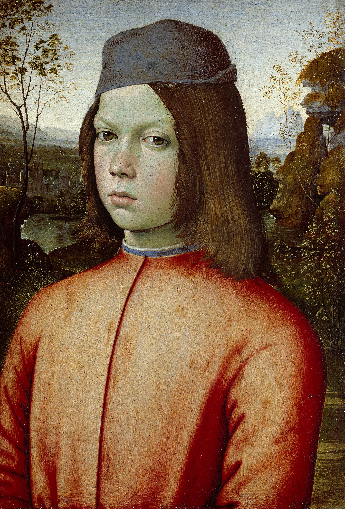
Pero al mismo tiempo, bajo esa alegoría de la edad, comenzamos a palpar el carácter de la personalidad futura: en el cerramiento de este muchacho, en su seriedad, en su extraordinaria focalización y concentración de la atención. Tiene el rostro pintado de tal modo, los ojos pintados de tal modo y especialmente la línea del vestido, que por ellos se ve que el alma está completamente cerrada. No está abierta, como en los muchachos rusos de los cuadros de Venetsiánov o de Tropinin, que tienen el alma abierta, que se asombran ante el mundo.
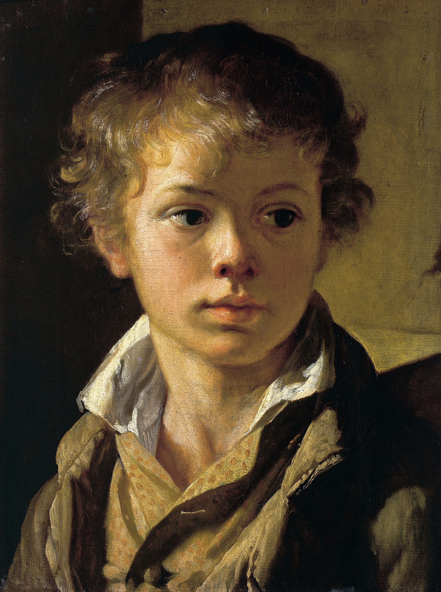
Aquí el muchacho ya tiene una defensa elaborada, como si llevara una cota de malla puesta. Ya actúan absolutamente todos los sistemas, aunque aún no ha tenido tiempo de convertirse de niño en adolescente. En él actúan la atención, la defensa, la concentración, es decir, los rasgos de carácter que eran obligatoriamente necesarios al hombre de esa época, que entraban en el sistema de personalidad de la época del Renacimiento.
En este sentido es extraordinariamente demostrativo el recurso a la representación de David adolescente. El niño, el muchacho o el adolescente ya comienza a ser representado como personalidad determinada.
Existe una investigación que demuestra que el modelo para la famosa escultura de David, hecha por Verrocchio, fue Leonardo da Vinci, que se encontraba aprendiendo en su taller23. Verrocchio, al representar al muchacho David, igual que Pinturicchio, muestra esta dualidad: fragilidad y fuerza. Tras el aspecto semipueril se percibe un extremismo interior, una agresividad en el gesto de la mano con el puñal afilado, con el codo echado hacia delante. Se siente en él una tensión, una fuerza desesperada, que era propia de las gentes de aquel tiempo. Cellini era artista, no condottiero24; creaba una escultura magnífica. Y al mismo tiempo manejaba el cuchillo de un lado para otro: este no lo saludó como es debido, aquel le arañó, el otro tenía no sé qué expresión en los ojos... Y él, como se dice, no lo piensa dos veces. «Escupió la colilla y disparó a quemarropa», como canta Vysotski.
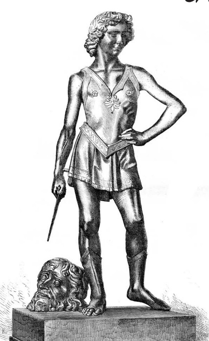
El proceso de formación de la personalidad, sin ninguna duda, comienza precisamente en esta época. Miremos el cuadro de Tiziano «La Presentación de la Virgen en el Templo». Es un fresco absolutamente asombroso.25 Recordemos el icono que consideramos arriba para compararlo con el cuadro de Tiziano.
Si el icono fue pintado a finales del siglo XV, comienzos del XVI, la diferencia entre el momento de la pintura de este icono y este cuadro no es tan grande.
V. A. Chivilijin escribe en su libro26 que nosotros tenemos un tiempo, y Occidente otro. En ellos ya la época del Renacimiento está en decadencia, y en nosotros la servidumbre no se abolió hasta 1861. ¿Acaso es el mismo tiempo histórico? Anatole France escribía magníficamente en «El jardín de Epicuro»27: si las personas están representadas en una misma fotografía, eso no significa que sean contemporáneos. No es un argumento a favor de Occidente ni a favor de Rusia; simplemente, personas que viven en el mismo tiempo según el calendario pueden no ser contemporáneos.
Y después esto se iguala. En el cuadro «La Presentación de la Virgen en el Templo»: un pequeño ser humano frente al mundo entero. Tiziano lo pinta así a propósito. La figurita no se ve, es muy pequeña, la escalera es enorme, los sacerdotes del templo de Jerusalén son así de grandes, la gente abajo. En este cuadro están representados los contemporáneos de Tiziano. El pintor muestra que ella está sola, sola frente a todo el mundo, porque es personalidad, porque tiene voluntad, misión. Es el mundo de las viejas, de las vendedoras, de los aristócratas, y ella sube por esa escalera.
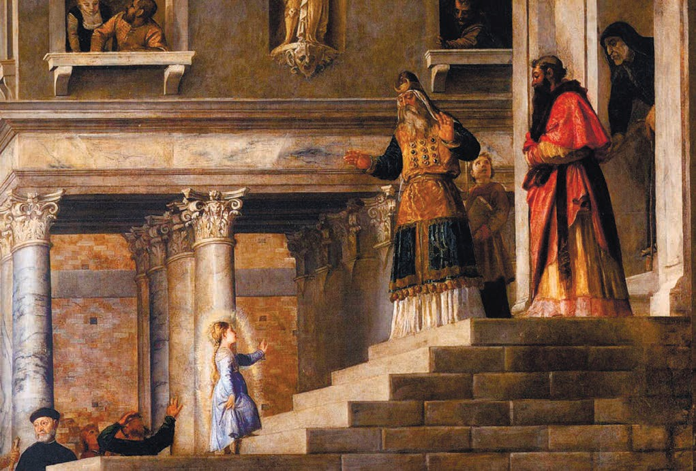
Es el mundo físico que existe en el espacio metafísico. Aquí la escalera adquiere una gran importancia: significa la asimilación gradual del espacio. Y esto lo podemos ver en muchos cuadros; es una imagen muy difundida. Al mismo tiempo la escalera es el concepto de camino, un símbolo muy claro, fijado a determinadas categorías semánticas, categorías del tiempo inacabado, del espacio, del movimiento, del conocimiento mutuo. Tanto la escalera como el camino son símbolos que inician su camino con el arte del Renacimiento, y hasta ahora funcionan sin fallar.
Cuando Miguel Ángel hace el David, para él no tiene ninguna importancia que sea un muchacho, que sea pequeño. Para él es importante que David tiene la conciencia absoluta del vencedor, ya formada. Allí es muy difícil hablar de edad. En Donatello y en Verrocchio esto es importante; es ya el problema de la formación de la personalidad.
Miremos ahora el cuadro de El Greco «El entierro del conde de Orgaz». Aquí el niño es el eslabón que une el espacio visual y el cuadro. El Greco pintó en él a su hijo.
Su cuadro está dedicado a un milagro. «El entierro del conde de Orgaz»: un entierro donde entierra santos, no personas comunes. Al conde lo entierran San Agustín y San Esteban. Y el alma del conde de Orgaz el gran inquisidor la entrega directamente a Juan el Bautista28, que presenta su alma directamente a la cruz. «Y esto es verdad, este milagro es verdad —dice El Greco—, y testimonio de ello es mi hijo». Y los niños —recuerden el cuento del rey desnudo— nunca mienten, llevan la verdad. Si un niño atestigua un milagro, entonces es real. El pintor convierte al niño en guía.
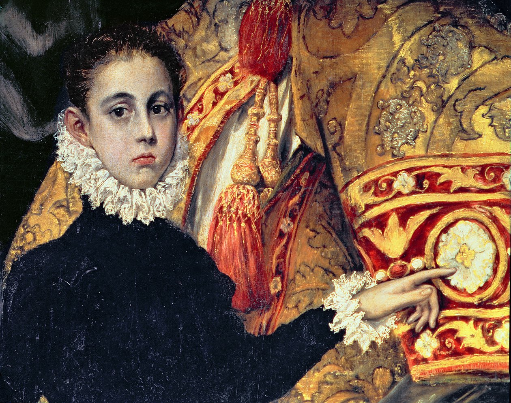
La época del Renacimiento da distintos matices del problema infantil, que no es base de la cultura. Pero de verdad los niños se convierten en héroes del arte en el siglo XVII. En el siglo XVI los pescamos del arte, pensamos dónde están, cuál es su lugar, y en el siglo XVII los niños son héroes, iguales a los adultos en el arte. La personalidad del niño y la personalidad del hombre se vuelven equivalentes para el pintor. Incluso puede decirse que la personalidad del niño significa más que la personalidad del hombre adulto.
Cuando hablamos del problema del retrato infantil en relación con la época del Renacimiento, hablamos de ello en conexión con los problemas de la cultura: así como se modela el problema de la cultura, así se modela también este problema. Pero el Renacimiento es una época de grandes problemas, y el siglo XVII es una época de consideración. En la época del Renacimiento no hay problemas de consideración: hay planteamiento del problema, hay su afirmación humanista.
¿Cuándo se inventó el microscopio? En el siglo XVII.29 ¿Y qué hacía Leeuwenhoek con el microscopio? Examinaba. Para el siglo XVII es característico el examinar. La época del Renacimiento tiene, con todo, un punto superior para la consideración: a la espalda del hombre, de la personalidad, siempre está el santo.
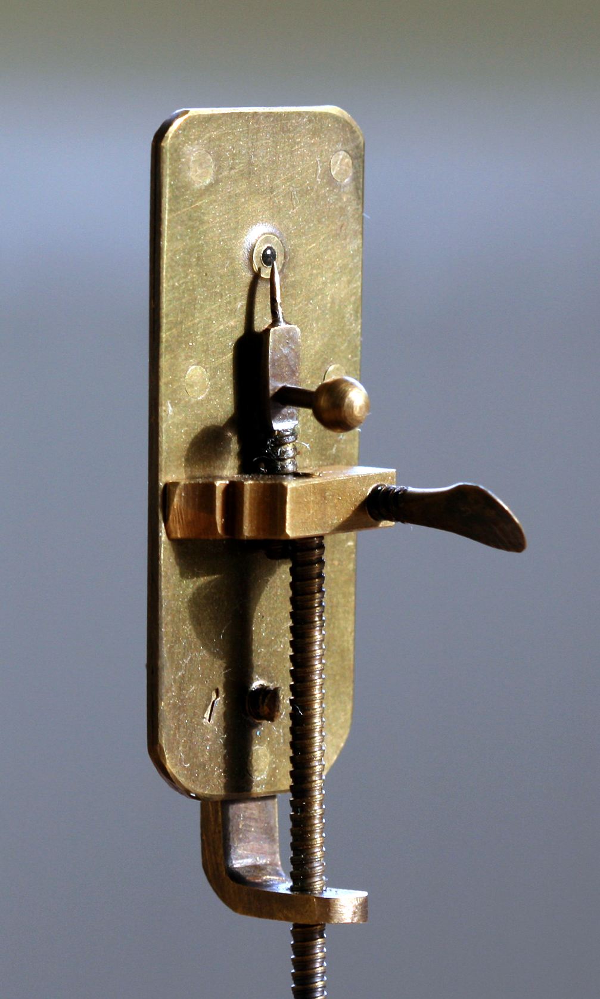
Y aquí entramos, por así decirlo, en la habitación, realizamos el hecho de la presencia dentro del espacio del siglo XVII, y no la separación de él o la elevación sobre él. Junto con Don Quijote y Sancho Panza entramos en el gran camino, en la gran ruta; ellos nos introducen en su acción, y desde dentro, no desde fuera. Don Quijote nos introduce en su mundo interior, y no cabalgamos al lado, sino dentro de él. Lo mismo hace la dramaturgia española y la novela-viaje del siglo XVII. Comenzamos a considerar.
El siglo XVII en el arte es tan interesante que nadie ha empezado siquiera a estudiarlo, aunque se pueden ver muchos libros firmados con nombres sonoros. Y sin embargo el siglo XVII se considera en una clave muy estereotipada. Se sabe que terminaron las guerras de religión, que va la formación del absolutismo, de las escuelas nacionales. Son lugares comunes que ya estorban, en lugar de ayudar a la consideración. Es decir, es un siglo muy importante: el siglo de la consideración, cuando para el hombre desaparece la vertical del mundo, cuando no mira desde un punto superior, ni de abajo hacia arriba, ni de arriba hacia abajo, sino dentro del mismo espacio.
Miremos el cuadro de Velázquez «Las Meninas». En Madrid, en el museo del Prado, donde está expuesto, este cuadro está situado idealmente: la parte superior toca el techo, y la inferior, el suelo. Y resulta que, cuando uno entra en la sala donde cuelga este cuadro, solo tiene que dar un paso para encontrarse dentro del cuadro. Velázquez cuenta precisamente con esto, porque como espectador usted está dentro de este cuadro, está de pie en algún lugar de aquí, invisiblemente presente dentro de esta escena, y los héroes del cuadro están detrás de su espalda. En el espejo colgado ve los reflejos de esas personas. Ante usted, la puerta.
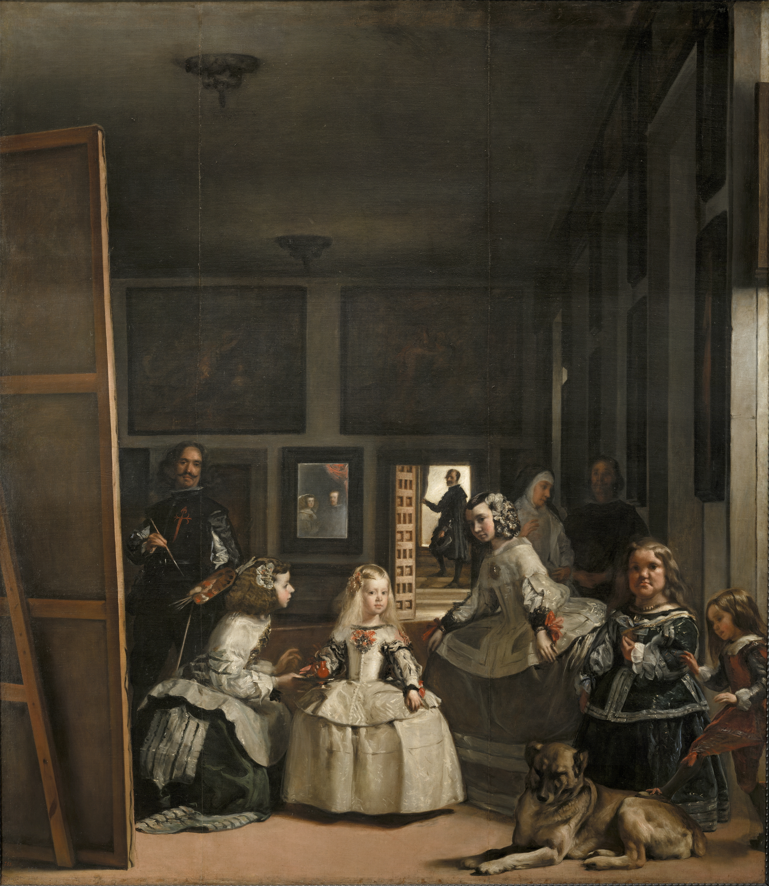
En la época del Renacimiento usted estaba separado del espacio, y ahora está unido a él. El siglo XVII muestra los detalles, examina.
Aquí conviene detenerse en Velázquez, cuya obra ocupa un lugar muy grande en el arte. Quizá, si tomamos el tema infantil, el nombre de Velázquez estará en primer lugar. Le gustaba representar a los niños y le gustaba representar a los lisiados, a los enanos. Son sus héroes principales, básicos. Y a los hombres adultos no los quería mucho. No encontraba con ellos un lenguaje común; solo tenía contacto con los héroes principales de sus cuadros, aunque era pintor de corte de Felipe IV y estaba obligado a pintar lo que este le encargaba.
Velázquez y Cervantes, contemporáneos, genial pintor y genial escritor, fueron grandes directores de orquesta del mundo, y el mundo suyo no aparece tal como era, sino tal como ellos nos lo muestran. Vemos España tal como nos la muestran Cervantes y Velázquez. Cuando toman en sus manos su varita mágica y se colocan ante el lienzo, el mundo adquiere el rostro y los contornos que ellos quieren que adquiera.
Es demasiado largo hablar de la posición de estos dos genios de la humanidad. Pero si hablamos de los niños, en Velázquez (en el primero, y quizá también en el último) el tema infantil aparece como tema trágico. Antes de él esto no existía. Velázquez representa al hombre que vive en un mundo trágico. Él percibía el mundo solo trágicamente. Estaba vinculado al principio trágico, y por eso sentía con especial agudeza los eslabones débiles del hombre.
Cuando decimos que Velázquez estaba vinculado a la experiencia trágica, eso presupone sentidos muy profundos. Por ejemplo, su retrato del infante Baltasar, el heredero español. Velázquez pinta a don Baltasar en una ruptura muy interesante y contradictoria. Ante nosotros está un niño que ha cumplido un año (con este motivo le encargaron a Velázquez el retrato30).
En este retrato están representados don Baltasar y su educador. Don Baltasar con este motivo va ataviado. He aquí el cojín. Su tamaño es igual al tamaño de don Baltasar, es decir, ese objeto es igual al hombre. Sobre el cojín están los símbolos del poder: el casco de mariscal (porque ya es mariscal de España) junto con el bastón. Todo esto está expuesto, como en una exposición. Ya se le puede poner al frente del ejército.
Al infante ya se le ha asignado un significado determinado, pero él no corresponde a ese significado, porque Velázquez lo pinta absolutamente sin sentido y de un año. Ojos de botón, cuello de encaje y esfuerzos colosales por mantenerse en pie. Ese contraste es lo trágico, porque puede que se quede igual de tonto, y luego será mariscal de España. Es la trágica condena del hombre, la no correspondencia del hombre al lugar que ocupa en la vida. Esta no correspondencia es trágica tanto para la personalidad como para el mundo.
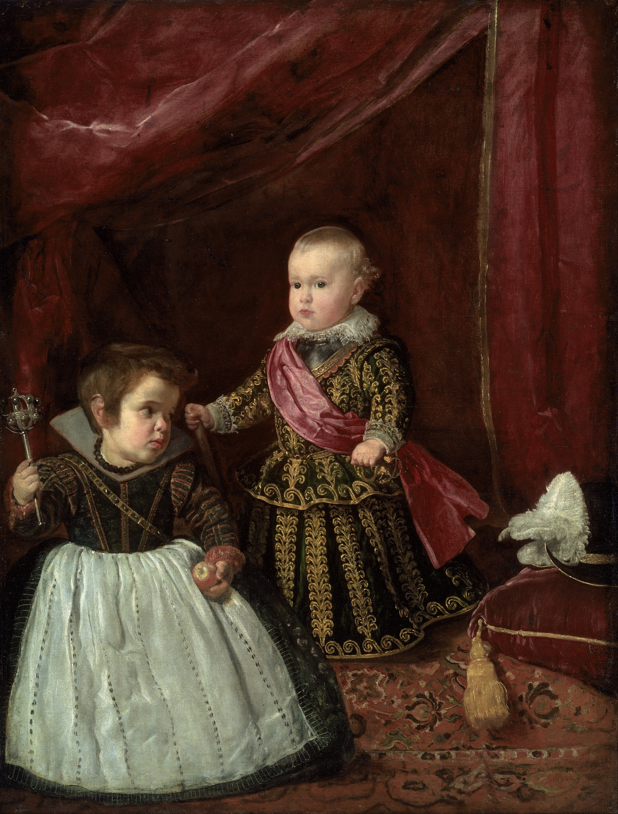
Como educadores y secretarios tomaban a enanos. Existe la opinión de que sentían culpa ante esos deformes. No es así. No tenían complejos de inferioridad. A los enanos se los consideraba guardianes y seres sagrados; se los ponía junto a los niños como pedagogos y educadores. El enano El Primo era secretario personal de Felipe IV.31 Y la enana que era educadora de Margarita está representada en el cuadro «Las Meninas» con una orden que no cualquiera podía recibir.
Estos enanos eran amos. Mantenían a los niños en una gran severidad. Y el pintor muestra la no correspondencia de esos elementos con el niño de un año, sin sentido, Baltasar, que necesita subirse aún al cojín para estar socialmente por encima del enano.
Miren con más atención el rostro del infante. El sinsentido, los ojillos de botón de don Baltasar, y la potencia espiritual del enano. ¿Quién aquí es el hombre-enano y el enano-hombre? No en vano se decía de Velázquez que en él los enanos tienen almas de gigantes y los magnates almas de enanos.
Estas rupturas trágicas en él son infinitas. El enano está pintado con una frente tal que no da impresión de inferioridad; al contrario, se siente en él una fuerza interior extraordinariamente poderosa. Y una debilidad absoluta en el más grande: en Baltasar. En eso está la ruptura y la no correspondencia.
He aquí a don Baltasar ya sentado sobre un enorme caballo de tiro, que puede soportar a Falstaff. Sobre ese enorme caballo han sentado a una pequeña muñeca, a una marioneta en todos los sentidos, porque para él todo está predeterminado por aquellas manos que tirarán de sus hilos. El hombre es una marioneta. Su condición de marioneta, su no-ser-de-verdad, en este caso está puesta en escena por Velázquez de todas las maneras posibles.
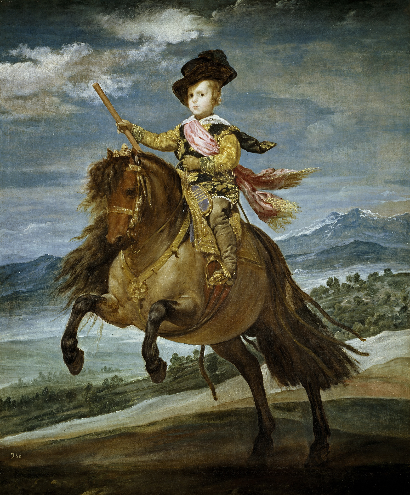
Velázquez no nos oculta su pensamiento. Todos los niños de Velázquez son profundamente desdichados: están inmovilizados, privados de la posibilidad de moverse, de actuar, de desarrollarse. Es el tema de la violencia sobre el ser infantil, sobre la naturaleza infantil. Es el tema de la violencia sobre el niño, que se permiten los adultos. Provoca en el alma de Velázquez un eco muy grande. Ningún retrato lo pinta como los retratos infantiles.
Lo mismo en el retrato de la infanta Margarita. Hay demasiado de todo para un cuerpo tan endeble y minúsculo: pesados drapeados, un vestido enorme, cabellos pegados sobre un cartón especial, a los que se ata una cola de cinta rojo brillante, una cadena de oro que va del hombro derecho a la mano izquierda; en la mano derecha un pañuelo, en la izquierda un ramo. ¿Por qué? Porque no está bien visto que las personas agiten las manos. Deben hablar sin las manos. Esto se extiende no solo a los adultos, sino también a los niños. Los niños de Velázquez son muy pequeños, enclenques, no formados, y tienen que desarrollarse, caminar, moverse.
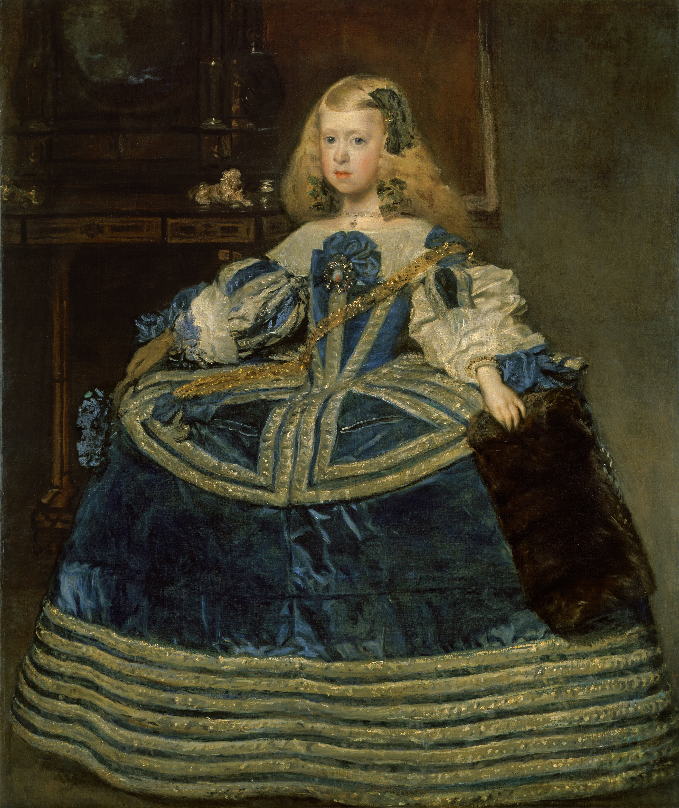
Es verdaderamente el tema español: la violencia sobre el niño, la violencia sobre el hombre. La violencia sobre el ser frágil, débil, la sentimos en este cuadro. Velázquez no hace un análisis particularmente profundo de la personalidad infantil, del carácter infantil. Él en la infanta Margarita, a la que ama mucho, ve una planta raquítica, una flor raquítica. En ella ya están todas las huellas de la degeneración: sienes azuladas, párpados pesados, mandíbula pesada. Es una persona condenada a una muerte trágica. A la muerte por anemia, por matrimonios mixtos.32 Son gentes trágicas, marionetas condenadas.
Y a los enanos, a esas personitas pequeñas, Velázquez los pintaba con rostros fuertes, con un enorme poderío interior.
Y completamente otros son los niños de Rembrandt. En él también hay una serie muy grande de cuadros sobre este tema. El siglo XVII es el siglo de la representación de los niños. Para Rembrandt no es característico ese sentimiento trágico como en Velázquez. En él incluso en las últimas obras esto no está. Era un hombre sabio, de temple muy optimista, un hombre muy feliz. Vivía dentro de su propio mundo, supo conseguir que su mundo de pintor se realizara por completo, su mundo era adecuado a su principio humano. No tiene esa tragicidad en la que vivía Velázquez.
Rembrandt vivió como quiso. Él mismo se eligió su vida y esa vida la realizó consecuentemente. En nuestra literatura todo se confunde. Creemos que si primero se casó y fue rico, y después tuvo menos dinero, por eso es desdichado; o que fue desdichado porque los holandeses no lo reconocían.
Y no necesitaba que lo reconocieran. Creaba lo que quería, vivía en acuerdo consigo mismo como pintor. Comprendía aquel lado del mundo que le estaba abierto. Por eso en él las personas están privadas de menoscabo y de tragicidad. En él las personas son extraordinariamente profundas, extraordinariamente abiertas. Rembrandt descubre el misterio del ser, de la dialéctica de la conciencia humana. Es el único entre los retratistas del siglo XVII que creó el retrato dialéctico. Realmente descubre los misterios de la conciencia humana. En Velázquez el niño es un sistema emocional abierto, pero ya condenado y quebrado, una marioneta que da tanta lástima que no hay palabras, y no se puede ayudar. Y en Rembrandt por primera vez en el arte se muestra al niño como un mundo abierto emocionalmente, como una estancia con ventanas abiertas de par en par, como un sistema dispuesto para cualquier impresión, abierto a la percepción emocional.
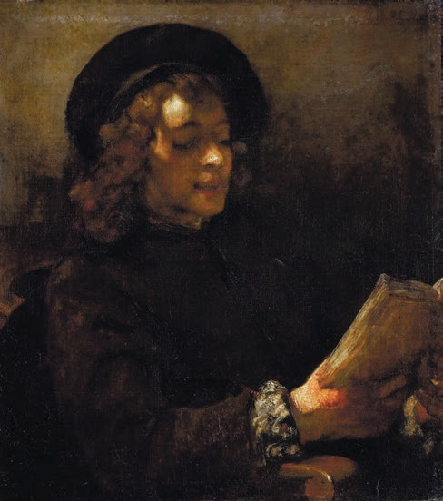
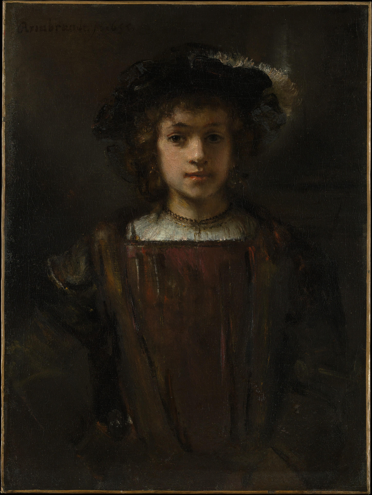
Tiene retratos infantiles notables, tiene una Sagrada Familia.33 Allí también hay una entonación particular que nunca vemos en el arte. Es el tema precisamente del contacto espiritual, emocional. En él tiene una importancia muy grande el sistema de vínculos emocionales, de vínculos del hombre con el mundo y de las personas entre sí.
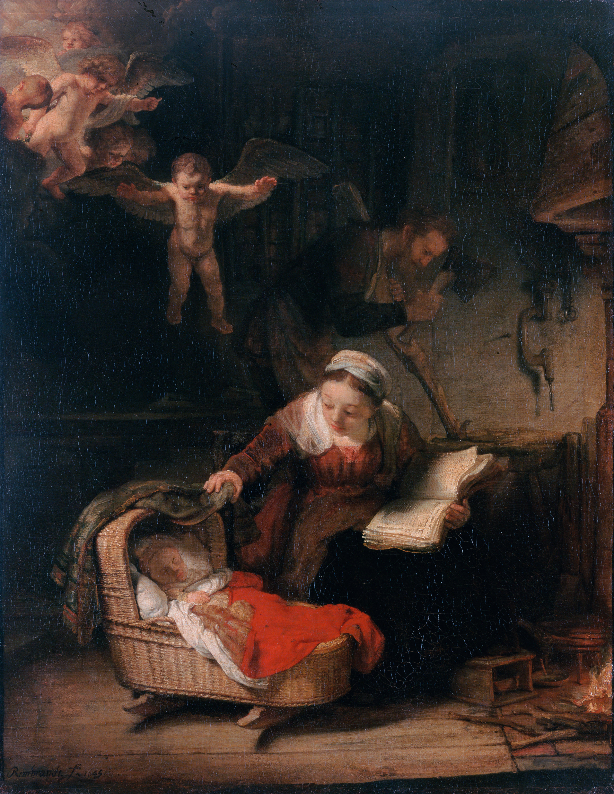
Si en la época del Renacimiento ese vínculo es la familia, aquí ese vínculo es la verdad. El propio hijo para Rembrandt es un modelo infinitamente variado, igual que él mismo para sí en sus autorretratos. Para él el hijo no es un muchacho ideal, sino un hombre en distintas fases de la formación de la vida. Estudia la dialéctica de la conciencia y de la formación de su mundo emocional a través de sus autorretratos. Y estudia lo mismo en su propio hijo, comenzando desde el momento del nacimiento.
Si Leonardo es un investigador científico, duro, privado de emociones, Rembrandt es un pintor que toma precisamente la emoción, el vínculo emocional de las personas con el mundo y entre sí, como base de las acciones de la personalidad. Rembrandt es el maestro que planteó este problema como tarea de toda su obra.
Pero en Holanda hay pintores en los que los niños entran en el cuadro como por casualidad. Pieter de Hooch no tiene la tarea de la representación del hombre como Rembrandt, no tiene la tarea de la representación de las relaciones humanas. Es maestro del interior, pero en el interior actúan personas. Si miramos los cuadros holandeses, veremos un rasgo completamente nuevo: el contacto de los padres con los hijos. No la familia como representación, sino el contacto humano. Son contactos multiformes, polifacéticos. En Rembrandt es una disposición hacia el vínculo espiritual, hacia el vínculo emocional; y en los holandeses, hacia los vínculos cotidianos, hacia la enseñanza de los niños según la experiencia de los padres.
Por ejemplo, la madre le busca a la niña los insectos en la cabeza, se los peina, o le muestra algo que va a llevar a la mesa, o la toma de la mano y le cuenta algo; es decir, aquí hay constantemente un trabajo pedagógico. Los padres enseñan a los niños, no como en la escuela, para que todos sean igual de hermosos, como los efebos antiguos, sino al nivel de su propia experiencia.

En el arte irrumpe el sistema de la educación social del niño. Para el siglo XVII este sistema de educación social del niño tiene una importancia muy grande. Aunque no en todas partes. España es un caso aparte. Allí estaba Velázquez: un pintor equiparable a Shakespeare o a Cervantes en la comprensión de la tragicidad del mundo. Y ya en Rembrandt hay vínculos emocionales. En los holandeses el niño se comunica con la madre, hay enseñanza.
He aquí, por ejemplo, un cuadro tranquilo y hermoso: la vida pacífica de una familia burguesa holandesa. El padre se va al trabajo, la niña juega con el aro, le pregunta algo a la madre, la madre le responde. Es decir, no hace rodar el aro de modo abstracto, sino que se comunica con su madre: es un proceso de enseñanza, de comunicación. Aquí no verán ustedes en ninguna parte niños sacados del entorno social. Están en ese entorno de adultos como en una caja. Existen en otro sistema de relaciones y, por lo tanto, en otro sistema de conciencia.
Hay que recordar al pintor asombroso en este sentido: Anton van Dyck, discípulo de Rubens, que trabajó en Inglaterra. A los ingleses, en general, no les va muy bien: entran en el arte cuando alguien los representa. Fue un alemán a la corte de Enrique VIII34, Barbazul, y mostró al obispo de Canterbury, a Enrique VIII y a toda la compañía. Había que acertar así: llegó y lo pintó todo.
Y después esperan otra vez a que llegue alguien. En el siglo XVII llega van Dyck, y de nuevo acertó históricamente: representó a Carlos I y a toda la familia, la cabeza cortada, etc. Otra vez dio en el clavo. Después los ingleses empezaron a representarse a sí mismos por el método de van Dyck. Y luego llegó el siglo XVIII, y ya no tuvieron nada interesante en la historia.
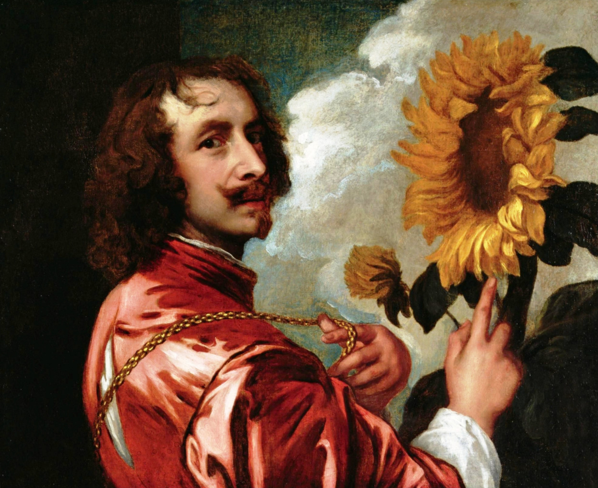
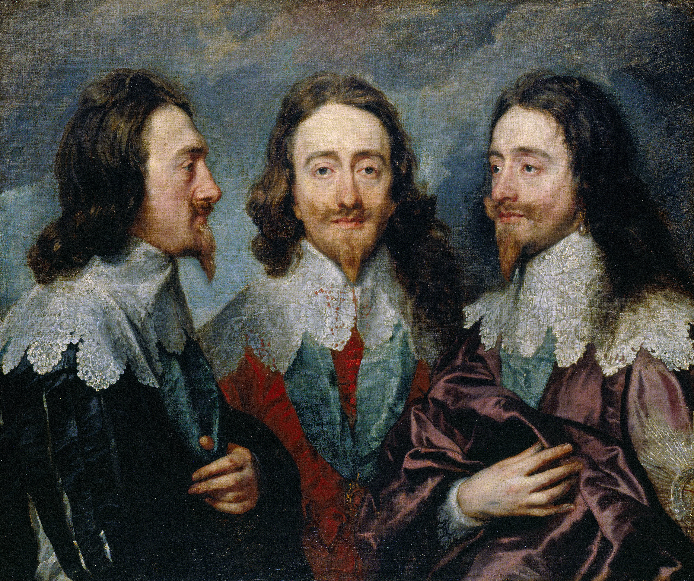
Van Dyck, discípulo de Rubens, trabaja en un momento histórico muy interesante. Magnífico maestro; los ingleses están encantados con él, porque pinta admirablemente a los aristócratas. En Inglaterra se acomodó magníficamente. Era una personalidad asombrosa. Pintó muchísimos niños ingleses.
El siglo XVII es el siglo del planteamiento consciente de los problemas de la pedagogía y de la educación. Es una disposición absolutamente consciente hacia la socialización de la personalidad. Los holandeses desarrollan a los niños en el nivel burgués; Rembrandt lo mostró en su propio hijo; y los ingleses preparan a su criterio a sus ciudadanos.
Van Dyck representa al hombre con un determinado código de comportamiento, que ya se forma psicológicamente desde la infancia. Esto se ve por cómo está de pie esa persona, cómo se mantiene. Está claro que esa pedagogía ya está a su espalda. Es un sistema de relaciones con el mundo, porque son precisamente los ingleses los que engendran el tipo del «dandi».
Los ingleses, a diferencia de nosotros, los rusos, cuidan mucho su mundo interior. Son nuestra completa antítesis. Para nosotros lo principal es hablar de corazón a corazón, no escuchar lo que te dice otro, sino expresarse uno mismo. Por eso todos los intentos de Pedro de poner alguna decencia sobre la revelación de la propia alma, como luego se vio, tuvieron éxito solo hasta la segunda copa. Hasta la segunda copa la gente aún seguía las reglas, y ya en la tercera todo iba a la antigua usanza. Por eso el intento de introducir en Rusia el protocolo no se llevó a cabo de ningún modo. Por eso fueron necesarios los esfuerzos de Malinovski para sacar una sola generación del Liceo de Tsárskoye Seló, gracias a la cual seguimos existiendo hasta hoy. En cuanto tenemos que hablar de la intelligentsia, recordamos de inmediato a Delvig, a Pushchin, a Küchelbecker: aquella misma promoción del Liceo.
Y en los ingleses esto entraba en el sistema de educación inmediatamente, desde el principio. Ya el rey Arturo dio las reglas de comportamiento, el código caballeresco. Los ingleses cuidan mucho su alma. A esa apertura oponen su propio sistema de comunicación con el mundo: cierta frialdad externa, cierta altivez externa.
Y un ejemplo brillante de esto es el encantador retrato pintado por van Dyck: el retrato de los hijos de Carlos I. Son niños de entre 2 y 6 años. Es interesante compararlos con los niños de Velázquez. En Velázquez vemos la tragicidad, la trágica condena de esos niños, su condición de marionetas. Y aquí tenemos que ver con una escuela. Los empiezan a educar, a enseñarles el protocolo: les enseñan cómo hay que estar de pie, cómo hay que caminar. ¿Ven cómo Carlos sostiene a su hermanita de la mano?
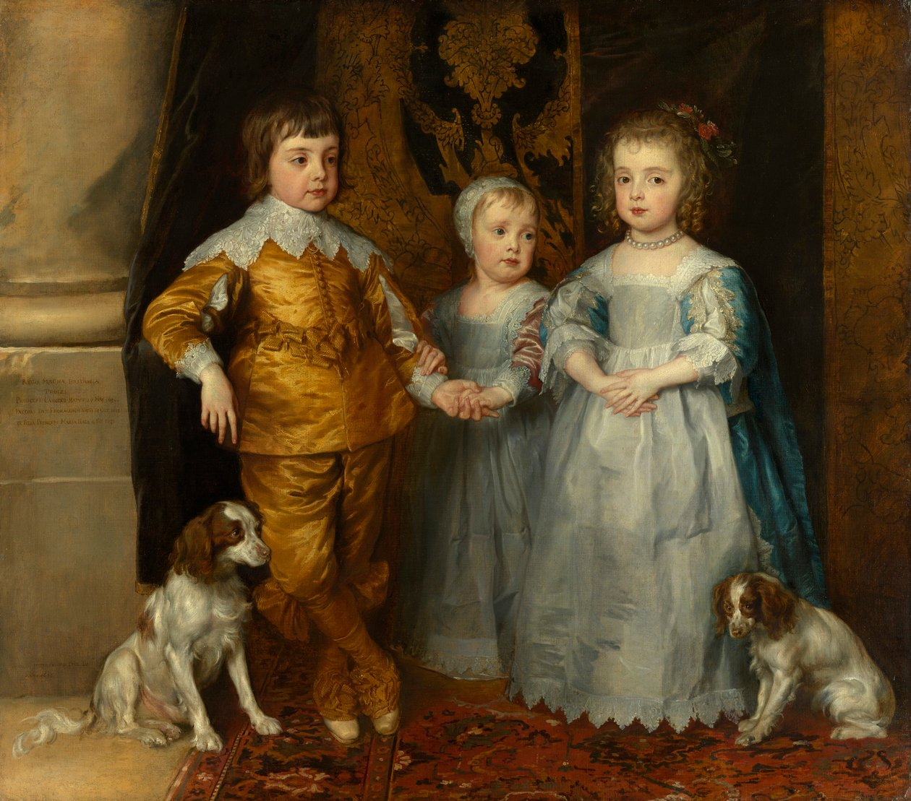
Aquí está mostrada la escuela de educación de estos niños. Pero solo por cómo pinta los rostros infantiles, con una vivacidad inmediata, cómo los pinta móviles por dentro, comprendemos que en cuanto termine la ceremonia del retrato, entrarán en el estado de movilidad infantil, de comunicación infantil, de mundo infantil. Todo está en el nivel infantil. Desde muy temprano comienzan a pasar por el sistema de formación, de educación psicológica y social por etapas. Esto lo observamos a través de una gran cantidad de retratos de comienzos del siglo XVIII.
En el siglo XVII dominan dos tendencias. La primera es la representación del hombre adulto en relación con el niño: no simplemente el niño por sí mismo, sino los adultos y el niño como concepto de familia, como ocurría ya en la época del Renacimiento, en los cuadros de Tiziano. Es la representación de los niños como elementos de la familia, como miembros de la familia, representación del linaje nobiliario, de la heráldica, del vínculo sucesorio, del apellido, etc. Es, por un lado, una unión profunda y, por otro, casi formal, a través del concepto de linaje, de familia y de vínculos sucesorios. Y la segunda tendencia en el siglo XVII es la representación precisamente de las relaciones entre el hombre adulto y el niño: relaciones de orden espiritual, de orden cotidiano, de orden social. El pintor dirige su atención a la comunicación. Podemos decir que en el arte del siglo XVII aparece la representación del niño precisamente en el proceso de aprendizaje o de interacción con el hombre adulto, lo cual antes no existía.
Y he aquí que en el siglo XVIII este progreso continúa, es decir, continúa el desarrollo de la misma línea que se apuntaba en el siglo XVII: la interrelación del hombre adulto y el niño, la influencia consciente, pedagógica o espiritual, del adulto sobre el niño.
Otra novedad aparece en el siglo XVII: la representación de los niños según su edad. Si tomamos la época del Renacimiento, veremos que allí los niños son pequeños adultos. Allí el concepto de «infancia» como fase determinada del desarrollo, psíquico y emocional, está ausente. En Pieter Brueghel, sobre esa ignorancia de la dialéctica de la edad, de la formación psíquica, de la evolución de la psique, está construido el enorme cuadro «Juegos de niños». Allí los niños son adultos y los adultos son niños. O los adultos como niños que nunca crecen. O los niños que nacen ya con todas las cualidades psíquicas del hombre adulto.
En el siglo XVII aparece la representación de los niños teniendo en cuenta su edad, sus emociones, pero vemos la representación de los niños en un aspecto determinado, en una posición determinada en la sociedad: son hijos de reyes, hijos de cortesanos, de personas de alta posición. Este momento es muy fuerte en Velázquez: lo infantil se sofoca en el niño muy pronto, sobre los niños se superpone el sistema de educación social. En Velázquez esto se convierte literalmente en problema de cataclismo psíquico, de tragedia, de choque entre la inmediatez del niño, su necesidad de moverse, de percibir el mundo a través de las emociones, y aquella ley de la educación, aquella ley social dentro de la cual se encuentra. Velázquez da sencillamente la tajante escisión del conflicto. En él esto también se convierte en un problema determinado, incluso, quizá, de orden personal: es tu camino vital y la imposibilidad de realizarlo, o es tu ego y la incapacidad de ese ego de desarrollarse por causa de alguna presión externa. Este problema es muy importante para Velázquez, y se proyecta con especial agudeza a través de los niños.
El siglo XVIII es el siglo de la Ilustración. Y no se distingue por un planteamiento por principio distinto de este problema. Aquí continúa la misma idea de la interacción de niños y adultos. De modo muy interesante se revela en Chardin, el pintor francés del siglo XVIII, en cuya obra los niños ocupan un lugar muy grande. Y los niños ya no se convierten en un elemento secundario, poco significativo del cuadro. En sus cuadros «Oración antes de la comida», «La lavandera»35, el niño sigue siendo un personaje tan serio, importante y responsable dentro de la tarea artística como el hombre adulto.
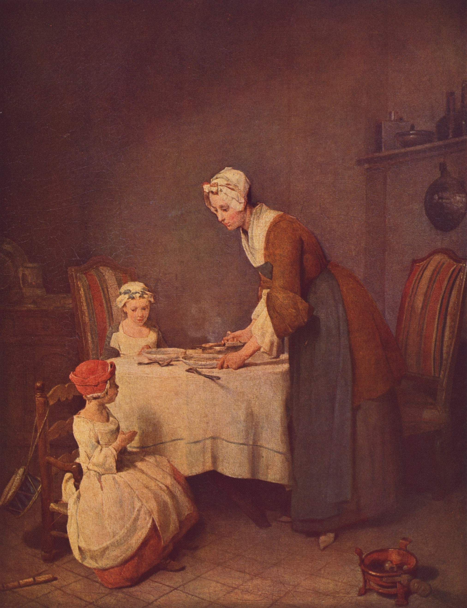
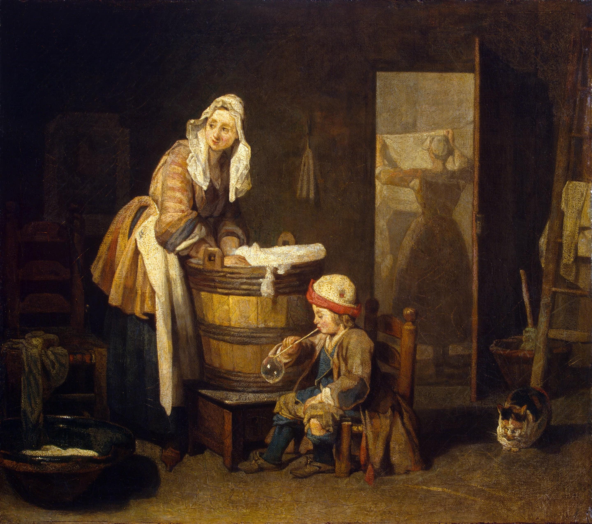
Aquí está mostrado un entorno determinado: padres, hijos, sus ocupaciones; están unidos por un entorno común. La madre está lavando de pie, y el niño está sentado junto a ella en una sillita. El niño está vinculado a ella, es decir, es la continuación de la línea del vínculo entre el hombre adulto y el niño, su unión a través del espacio psicológico y social. Este vínculo se desarrolla en el siglo XVIII, podemos observarlo en el ejemplo del cuadro «La lavandera». El pintor, por supuesto, no es pedagogo y no se plantea una tarea pedagógica; representa esto de modo inconsciente, pero una y otra vez afirma en sus cuadros algo nuevo en la relación con los niños. Si el siglo XVII apunta el sistema de comunicación, de influencia, de educación, en Chardin esta línea se profundiza. Se manifiesta muy claramente: la madre enseña a los niños cómo comportarse en la mesa. Y antes de que les sirva la comida en los cuencos, deben poner las manitas de un modo determinado y pronunciar determinadas palabras. Es un proceso de aprendizaje; niños y adultos aquí no son lo mismo. En el cuadro de Chardin «La lavandera» la mujer lava, es decir, está ocupada en su asunto, y el niño hace pompas de jabón. Es decir, el niño está mostrado de acuerdo con su edad. Si en Velázquez, o en van Dyck, o en los pintores del siglo XVII está representado el hombrecito que está obligado desde muy temprana edad a entrar en los problemas de las personas adultas, en sus ocupaciones, en el siglo XVIII se manifiesta claramente otro pensamiento: los niños son niños. Viven según sus propias leyes, están ocupados en sus propios asuntos, y si la mujer lava, el niño con pleno derecho hace pompas de jabón.
Es decir, a partir del siglo XVII solo se apunta esta línea, y ya en el siglo XVIII los niños se convierten en objeto pleno de la representación en el arte, de acuerdo con su edad y con las ocupaciones características de ella.
Precisamente en el arte francés del siglo XVIII se dedica una atención tan grande a la cuestión de la edad, a la psicología de la edad, a la correlación de la psicología infantil y las ocupaciones, a la educación social. Desde el siglo XVIII el tema infantil ocupa una posición completamente particular en el arte. El desarrollo de este tema, la representación del niño y de la psicología de la edad es muy interesante precisamente en Chardin.
Tiene otro cuadro interesante que se llama «Muchacho jugando a las cartas».36 Este muchacho se ocupa de jugar, disponiendo las cartas. En la cajita vemos las cartas asomando; juega a los soldaditos, groseramente hablando, utilizando las cartas. Las cartas son para él objeto de juego. El muchacho está pintado por Chardin enteramente inmerso en esa ocupación. Exactamente igual que el hombrecito sentado junto a su madre-lavandera, que está absorto en su ocupación: hacer pompas. Miremos otra vez a esa lavandera. Su mirada está fuera del encuadre, porque, mientras lava, está distraída; la atrae algo que sale de los límites de ese cuadro. Con el muchacho esto no tiene la menor relación: está completamente inmerso en su juego. Recordemos además que en Leonardo, en su cuadro «Madonna con la flor», había la misma plena entrega psicológica a esa ocupación infantil. Leonardo es Leonardo: es un pintor que trabaja no solo adelantándose al tiempo, trabaja en el alfabeto máximamente psicológico del mundo en general.
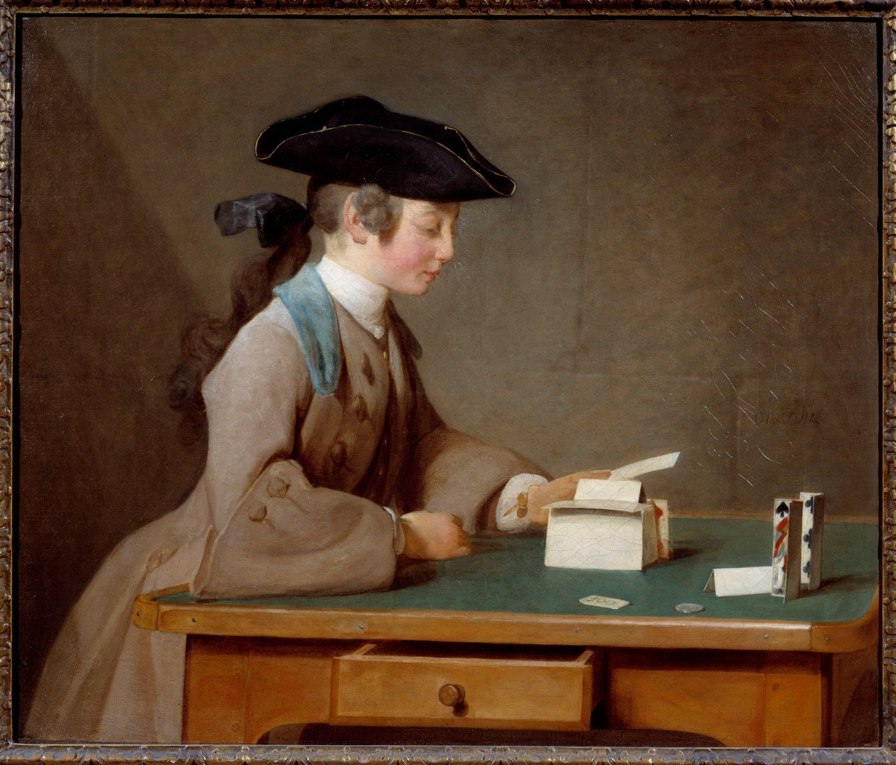
El muchacho en el cuadro de Chardin está ocupado con sus juguetes, exactamente igual que el que hacía pompas. Está entera y completamente absorto en el juego. No hay ningún estado adicional. El niño está mostrado armónicamente, está mostrado de acuerdo con su edad, a la que corresponde también su ocupación. Es la armónica correspondencia del estado espiritualmente concentrado y de la ocupación a la que se entrega, es decir, del juego. E incluso el propio carácter del juego corresponde a su edad. Es decir, en el arte los pintores muestran a qué equilibrio se lleva el niño, su ocupación y su estado espiritual, psicológico: plena inclusión.
El mundo en el que trabaja Chardin es el de los burgueses franceses. Y los niños en sus cuadros siempre están ocupados en algo, no importa en qué: aunque sea hacer pompas o jugar a los soldaditos. Lo importante es que está ocupado en algo.
En el siglo XVIII el desarrollo del tema del niño como mundo ya completamente autónomo, mundo correlacionado con la edad, descubre dos tendencias: aristocrática y burguesa. Los niños burgueses siempre están ocupados en algo. Están obligatoriamente representados en alguna acción de trabajo. Y en el pintor inglés del siglo XVIII Gainsborough el objeto de la representación era la aristocracia inglesa. También pinta muchos retratos de niños, no menos que Chardin. Es el «Muchacho de azul», son los retratos de sus hijas. Tenía dos hijas, y las pinta desde la más pequeña edad hasta el momento en que ya se convirtieron en señoritas y se casaron37. Aquí tiene otro tema: el tema de una espiritualidad infantil muy profunda y de cierta poeticidad del mundo interior del niño. Pinta obligatoriamente a sus dos niñas en algún contexto profundamente anímico-emocional. No en relaciones de trabajo con el mundo, sino en contacto emocional profundo, en actividad emocional-espiritual.
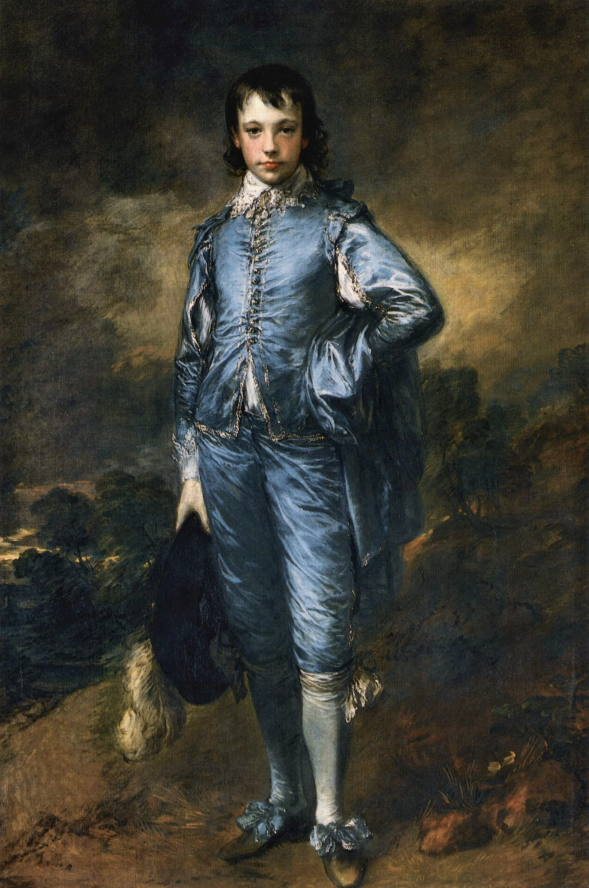
El «Muchacho de azul» está representado por Gainsborough sobre el fondo de la naturaleza. Las niñas también están representadas sentadas en el jardín. La cabeza de la niña pequeña está apoyada en la mayor. Toda la composición de este retrato doble atestigua una cercanía extraordinaria entre los dos niños. Y usted comprende, aun sin estar preparado para esa percepción profunda del arte, que cuando él entrelaza esas manos, cuando acerca sus cuerpos y sus cabezas, no es solo una cuestión de composición: es precisamente la tarea de mostrar su indisolubilidad, su cercanía. Y esa cercanía no es familiar, de linaje, como antes, sino cercanía espiritual, contacto interior. Estos contactos profundos no son como en el siglo XVII, cuando los adultos en los cuadros enseñan, muestran: instruyen pedagógicamente a los niños. Y no como en Chardin, en el que se muestra el lado laboral de la interrelación con el mundo. Aquí el niño está mostrado como un hombre que posee su propio volumen espiritual. Ese volumen propio profundo no es trágico, sino lírico: son niños soñadores, son niños que viven en aquel mundo de cuentos en el que, quizá, se educan.
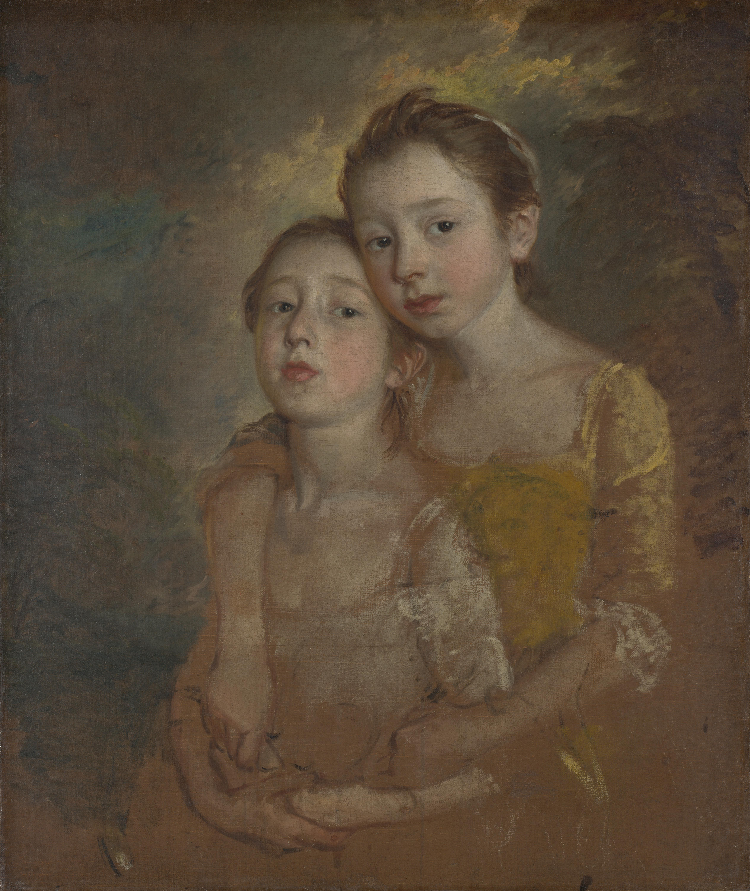
El sistema del vínculo emocional se elabora en el siglo XVIII y comienzos del XIX. Se vuelven muy de moda los retratos de niños y padres; la representación de mujeres con niños ocupa en el retrato de finales del siglo XVIII y comienzos del XIX un lugar muy grande. Puede incluso decirse que en los retratos de finales del siglo XVIII y comienzos del XIX la composición en la que está representada una mujer con niños o una mujer con un niño se vuelve rectora. Es tanto en la obra de Borovikovsky como en la de Levitsky, tanto en la obra del clasicismo como en la del romanticismo. Los dos últimos conceptos a veces no tiene sentido separarlos.
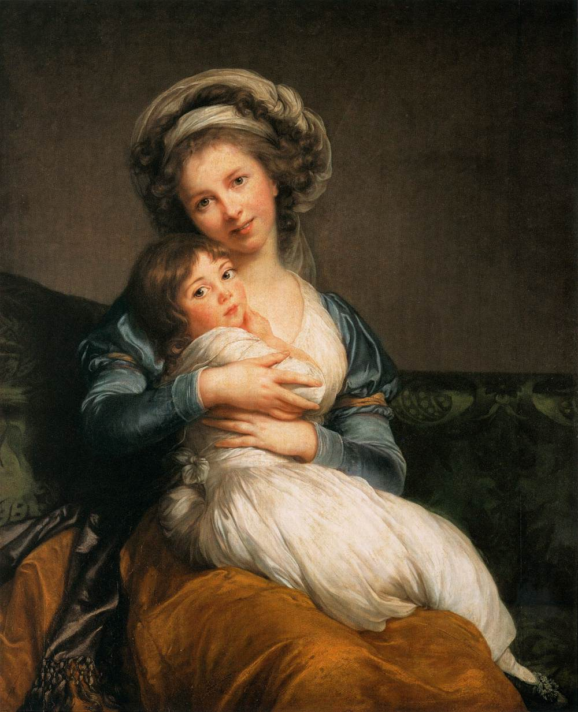
He aquí la representación de Vigée-Lebrun, discípula del pintor David38, con su hija. Vigée-Lebrun es pintora de la escuela de David, clasicista purísima. Era muy talentosa y además una mujer de sociedad. En el cuadro está vestida de un modo extraordinariamente hermoso según la moda de su tiempo, pero la tarea de su retrato tiene carácter romántico. Por eso aquí no vale la pena hablar de si es clasicismo o romanticismo. Aquí se trata de qué tendencia surge en este cuadro, qué problema. Es un tema muy emocional y profundo: la representación de los propios niños y la representación del vínculo entre los niños y los padres. ¿En qué se diferencia el planteamiento del problema del tiempo anterior? No en el concepto formal de familia, de linaje, de heráldica, sino en el concepto de familia como vínculos espirituales.
Lev Nikoláievich Gumiliov lo dijo magníficamente: «La familia son vínculos. Si no hay vínculos, es un poblado». Esta definición es extraordinariamente exacta; no hay nada que añadirle. La familia son vínculos; si no hay vínculos, y hay gato, perro, marido, mujer, hija, yerno, etc., es un poblado.
Pues bien, en el siglo XIX, a través de los niños, a través del tema infantil, la familia se muestra como vínculos. Y antes, cuando los niños se mostraban con los adultos, se mostraban precisamente como representación, linaje, genética, escudo, poder, fuerza, estructura social, o en el proceso de aprendizaje: padres e hijos. Y he aquí que por fin aparece un nuevo momento en la representación del niño, en la representación de las relaciones entre los niños y los padres: es el momento de los vínculos auténticos, de los vínculos profundos. En Gainsborough las niñas están físicamente próximas entre sí, sus manos están entrelazadas, sus rostros casi se tocan. En cuanto a la representación de Vigée-Lebrun con su hija, miren cómo están entrelazadas entre sí, qué abrazo el de la niña, que sujeta a la madre por el cuello, escondiendo casi la cabeza en su cuello, cómo la madre la abraza tiernamente. A través de ese entrelazamiento se nos muestra la imagen del mundo espiritual, de los vínculos espirituales.
Consideremos ahora la proyección de este mismo tema en los pintores rusos del siglo XIX. Y en primer lugar en un pintor como Perov, en sus cuadros «La despedida del difunto» y «La troika». Es difícil imaginar que Perov y Vigée-Lebrun pertenecen casi al mismo tiempo: la diferencia entre ellos es de solo 30-40 años39. Hay que tener en cuenta que en ese tiempo ocurrió muchísimo desde el punto de vista externo, social, pero desde el punto de vista del desarrollo del tema infantil en el arte no ocurre nada nuevo. Todo el siglo XIX está dedicado precisamente a lo que se ha dicho más arriba: la representación del niño desde el punto de vista de la plenitud de su propio mundo, de su propio pensamiento, del volumen que lo distingue del adulto.
¿Por qué consideramos precisamente el cuadro de Perov «La despedida del difunto» como continuación de los cuadros de Vigée-Lebrun? Vigée-Lebrun pinta un retrato, pero comprendemos qué entorno hay detrás de ese retrato: no solo el mundo de la educación o el mundo del intelecto, sino qué mundo de objetos y cosas hay detrás. Exactamente igual, cuando miramos los cuadros de Perov, también nos representamos muy bien qué mundo hay detrás: no solo el mundo de la educación, no solo el mundo de la naturaleza, sino también el mundo de los objetos y las cosas. Por eso es interesante analizar el contraste entre lo que está representado en Vigée-Lebrun y lo que está representado en Perov.
Vigée-Lebrun es discípula de David, aristócrata francesa; y Perov es un pintor que decidió sufrir de inmediato todos los sufrimientos del mundo. Hay que decir que un pintor no puede sufrir conscientemente por la humanidad. Si sufre, como sufrió Shakespeare, eso es una cosa. Pero si sufre como los peredvízhniki rusos, eso es completamente otra cosa, porque son sinceros, sinceros hasta el punto de que para ellos esto terminó de modo muy trágico. Se equivocaban sinceramente, se mantenían sinceramente en posiciones falsas. Era una falsedad sincera, porque se les ocurrió un pensamiento que luego se fortaleció y consolidó de un modo extraordinario: que alguien puede decidir por otro lo que será bueno para él. Asumieron la responsabilidad por toda la humanidad de una vez. Así veían su misión. Y nosotros, por alguna razón, debemos arrodillarnos ante ellos por esto y proclamarlos los más grandes pintores, porque ellos, como canta Vysotski, «se afligen con toda la aflicción del mundo». Era una situación peligrosa, pero era sincera. Y el castigo por la falsedad (y fue un castigo muy terrible) fue la renuncia al talento. Perov era un hombre fantásticamente talentoso. Su retrato de Dostoievski asombra por la profundidad, el pensamiento, la emoción. Pero Perov y otros peredvízhniki renunciaron deliberadamente al color, renunciaron deliberadamente a toda una serie de problemas de la vida. Les daba igual la pintura; necesitaban que simplemente todos estuvieran de pie y lloraran. Tenían que exprimir la lágrima, pisar con la rodilla y hacerla salir.
Es una posición muy peligrosa, que llevó al arte a un callejón sin salida. Hasta ahora seguimos pensando que en el arte lo principal es qué está representado, y no cómo está representado.
Con los peredvízhniki comienza el problema de la función del arte. Antes el pintor pintaba y pintaba y no sabía qué función mundial cumplía, en qué sentido respondía por el mundo. Velázquez pintaba y pintaba, por encargo de Felipe IV, y ni siquiera sabía que hacía algo para el mundo. Si se lo hubieran dicho, habría abierto mucho los ojos. Y resultó que sí lo hacía. Y los peredvízhniki pensaban que hacían algo, y resultó que no. Así que resolver esta cuestión aquí es difícil.
De un modo u otro, el peredvízhnichestvo es un fenómeno muy interesante tanto en el arte ruso como en el universal. Es la formación de un nuevo sistema artístico determinado, que hay que considerar no de modo rectilíneo (me gusta / no me gusta, clásico / no clásico), sino en la compleja proyección en la que se manifiesta y en la que da frutos benéficos y funestos.
Pero el tema infantil aquí se resuelve igual que en Vigée-Lebrun, y no desde el punto del que parte Perov. Se resuelve como la unión de los niños con los adultos a través del estado emocional-social.
Los pintores suponían que en el intelectual ruso (y no simplemente en el intelectual ruso, sino en el intelectual ruso perteneciente al mismo entorno que los amigos y amigas de Vigée-Lebrun), de pie ante ese cuadro, estaba a punto de despertar la conciencia. ¿Y quién, en rigor, vio esos cuadros? Imagínense cuántas personas en aquel tiempo vieron esos cuadros. Perov pintaba, Tretiakov compraba, ¿y cuántas personas los miraban? Las mismas que a Vigée-Lebrun. E incluso menos los miraban, porque cuando se exponían David y su escuela, en Francia ya estaban admitidos los salones artísticos con visita, mientras que en Rusia eso no existía. El Ermitage no era una colección estatal, sino imperial; Tretiakov funda su galería en los años 185040. Hay que comprender que ahora mucha gente va y mira esos cuadros, pero cuando se pintaban no eran patrimonio de todos. Eran patrimonio de personas iguales a Perov mismo.
En los cuadros de Gainsborough los niños están representados como seres espiritualmente autónomos, con su propio mundo espiritual. Y la segunda tendencia: la representación de las relaciones emocionales en la familia. Lo mismo vemos en Perov. Es la consideración de la familia a través del destino común, a través de los vínculos emocionales comunes, a través de la comunidad. Por eso en el cuadro «La despedida del difunto» vemos a la madre y junto a ella dos niños ante el ataúd. Esto, por supuesto, lleva a una adquisición muy temprana de la experiencia espiritual. Sin embargo hay que decir que el muchacho que está sentado en el trineo, pequeño, con el gorro bajado, participa en esto y al mismo tiempo no participa. Miren con más atención su rostro. Hay en él, por un lado, participación en lo que ocurre, pero es una participación puramente física: miedo, frío; y a la conciencia esto aún no le llega mucho.
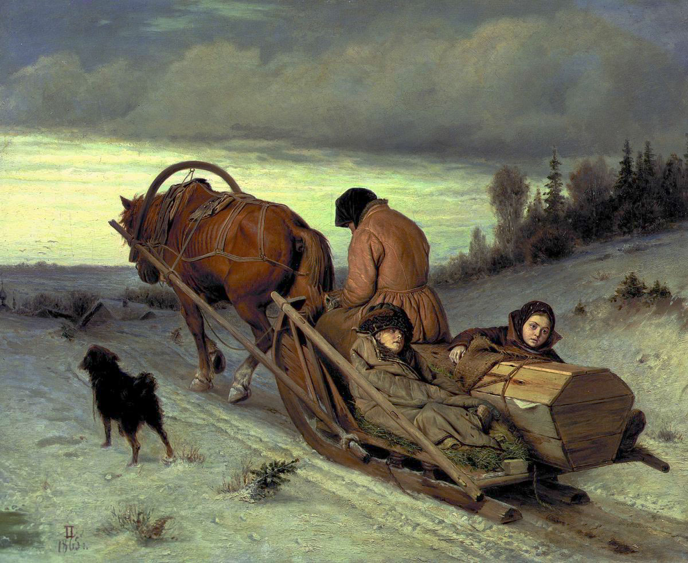
El cuadro más terrible en este sentido de Perov es «La troika». Aquí surge de nuevo el tema del que hablábamos: los niños como objeto que impacta fuertemente sobre el espectador, la explotación de la imagen infantil como instrumento de presión social. Si vemos cómo tres hombres adultos llevan una cuba, eso es una cosa. ¿Y cómo había que llevarla? Así la llevaban. Pero si la llevan los niños, eso es completamente otra cosa. Por eso tres niños están uncidos a esa cuba, uncidos a ella no por casualidad, sino a propósito, y por el frío llevan el agua. Y aquí vemos el sistema de las formas emocionales de la descripción de los niños y de su participación en un modo de vida determinado.
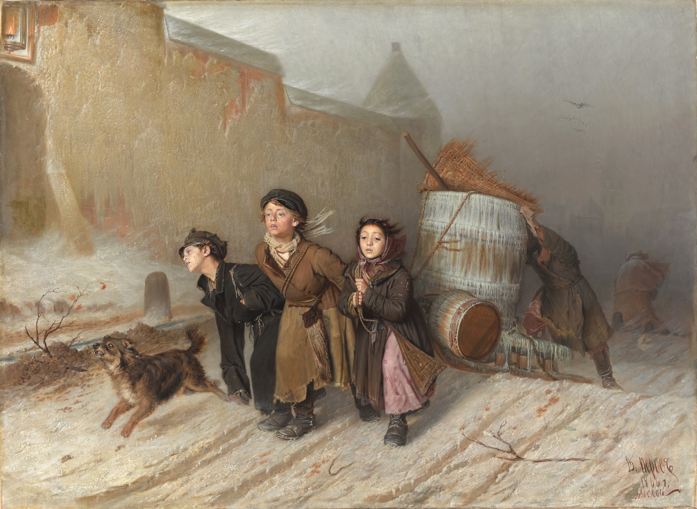
Junto a «La troika» es interesante considerar el cuadro de Delacroix «La libertad guiando al pueblo», porque allí el niño participa plenamente en lo que ocurre, como sustituyendo al adulto. Pero es un niño que se convierte en héroe nacional de Francia: Gavroche.41 Y si hablamos de hasta qué punto se utiliza a los niños como elemento ya de la jerarquía social y de la adaptación psicológica social, hay que decir que esto no lo hace Rusia, sino Francia. Francia lo hace a través de la literatura, de un modo extraordinariamente activo, sobre todo a través de un artista como Hugo. Francia crea la imagen nacional del adolescente, le atribuye un volumen psíquico y una madurez emocional que lo convierte en miembro de la sociedad, aunque sea en calidad de niño.

En el siglo XVI y antes a los niños se les representa básicamente como adultos, es decir, ignorando sus peculiaridades de edad. Cuando el arte introduce al niño en el mundo del hombre adulto, comienza a tener en cuenta su edad, y lo hace por vías diversas. La línea principal es la formación emocional-psíquica de la personalidad. Y los enfoques pueden ser distintos: como en Chardin, o como en Gainsborough, o como en Delacroix.
El siglo XIX sigue el mismo camino: representa el mundo interior del niño como personalidad plena, solo que tiene una etapa de edad determinada.
Para la segunda mitad del siglo XIX es muy característico un matiz nuevo, un tono nuevo que aparece en este problema. Ese matiz se reduce a que a veces el mundo emocional, o psíquico, o interior del niño es más significativo que el mundo interior del hombre adulto. Es un episodio único en el arte, singular, casi irrepetible. El siglo XIX va por el camino de la asimilación del mundo interior del niño: autónomo, emocionalmente lleno, muy sensible, muy abierto. De pronto toma y da un sesgo semejante en algún momento, cuando ese mundo emocional del niño se vuelve más pleno, más sustancial y más abierto. Pues el hombre vive en un mundo socialmente predeterminado y, por ello, algo falso y cerrado. Y la apertura completa es propia solo de los niños. Y aquí, ante todo, hay que recordar el famoso retrato de Mika Morózov.
La representación de Mika Morózov, Mijaíl Morózov, hecha por Serov42, es justamente una de esas obras que confirman el pensamiento expresado más arriba. No es simplemente una representación emocional o espiritualmente plena: es un mundo rebosante. Y además el niño existe en él de modo autónomo. Y para nosotros esa autonomía es algo enigmática.
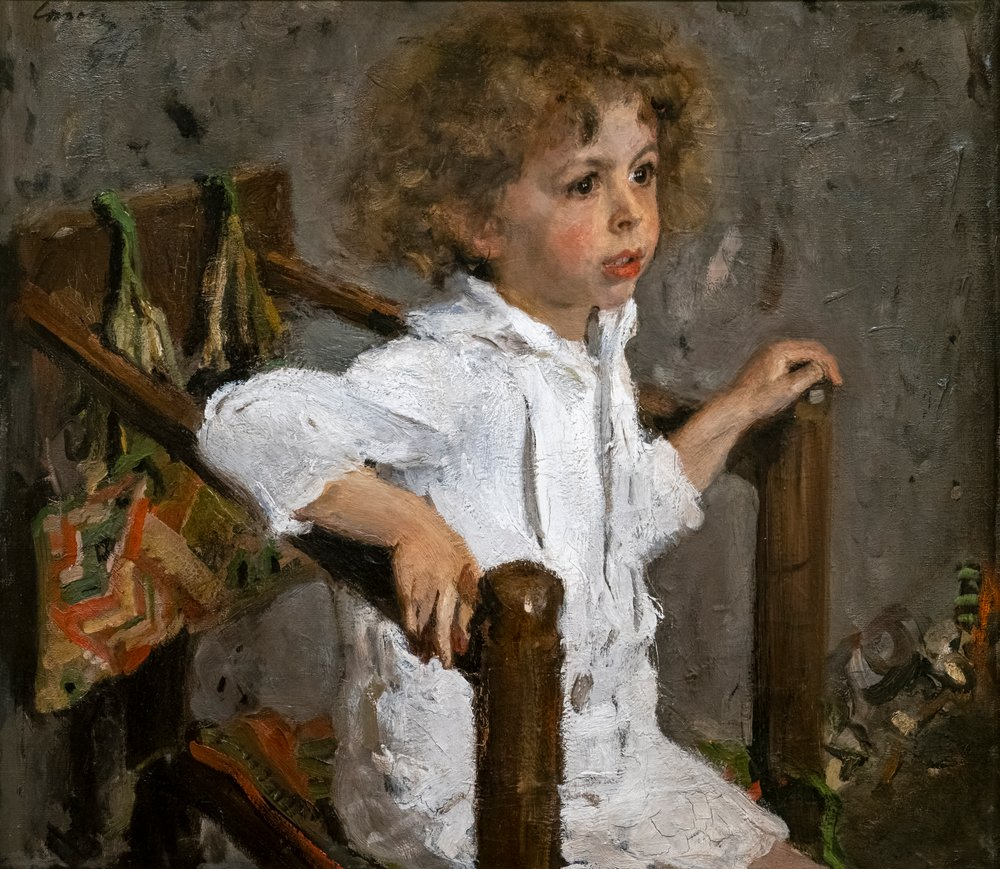
Es una lástima que este tema no se desarrollara en el arte. Los pintores son gente seria. Desde la segunda mitad del siglo XIX empiezan a ocuparse solo de la salvación del mundo. Los niños ya no les son necesarios. Están tan ocupados salvando el mundo que los niños se les caen por completo del campo de visión. Es el tema más alto, la nota más alta a la que llegó la representación del niño, y que se interrumpe muy pronto. Pero al mismo tiempo es la más profunda, la más fecunda.
Me tocó estar en el jubileo de Shakespeare en la Casa de los Sabios. Allí habló cierto hombre con una conferencia sobre Shakespeare. Seguramente decía algo absolutamente notable, pero lo principal es que era extraordinariamente parecido a alguien, ¿pero a quién? Y resultó que la conferencia la daba aquel mismo Mika Morózov, aunque ya siendo un anciano. Era shakespearólogo. Y no había cambiado: simplemente se había convertido en un hombre muy adulto. Le había salido barriga, pero las mejillas le habían quedado igual, y la naricita igual, y la boquita igual. Y en general toda su relación con la vida no había cambiado.
Serov es un pintor particular, poseía una cualidad. Hay que decir que retratos psicológicos no existen en general. Es algo distinto. Simplemente los llamamos así. Pero Serov tenía un rasgo: la implacabilidad de la observación artística, la óptica artística, la visión artística: veía en el hombre rasgos inmutables. Y no solo veía en el hombre rasgos inmutables, sino que veía en el hombre esos rasgos manifestados entonces, cuando se manifiestan. Conocía a ese Mika Morózov toda la vida, podía haberlo pintado mil veces, pero lo pintó en un momento determinado del tiempo. A este inquieto, impetuoso, enchufado con todos los bornes a la vida, que reacciona continuamente, cargado de un especial ardor de comprensión, y al mismo tiempo con cierta autosuficiencia espiritual interior. Aquí está todo: la extroversión, la personalidad, la dinámica, el movimiento, la inclusión en el entorno, la capacidad de cambiar a cada segundo. Es una inclusión multicapa, multiplanar en la vida, y al mismo tiempo cierta especie de sistema de profunda concentración mental. Todo lo que hay en ese niño es personalidad, y permaneció, como el autor tuvo la suerte de comprobarlo, para toda la vida.
Quizá la asimilación del mundo social por parte del hombre se configura mucho antes, en sus rasgos principales, en su esquema psicológico básico. Pero el arte apenas fija esta cuestión, y Serov, para quien esto era propio —era su don, su talento—, lo fija. Tiene muchísimos retratos infantiles. La famosa «Muchacha con melocotones» es un retrato no del todo infantil, pero no puede dejar de mencionarse. Es el retrato de la famosa Vera Mamóntova. ¿Y cuántos años tenía Vera Mamóntova?43 Ya no era una niña, era una adolescente. Igual que a Mika Morózov, Serov la conocía toda la vida. La pintó una sola vez en la vida, y podría haberla pintado igual que a Mika Morózov, cuantas veces quisiera. Pero pintó cuando ella estaba manifestada del modo más pleno, cuando estaba revelada como personalidad del modo más abierto, más acabado, cuando llevaba en sí un estilo, y el hombre es un estilo. En Mika Morózov ese estilo se proyectó a los 5 años. Y en Vera Mamóntova ese estilo se proyectó a los 15 o 14 años, y después solo hubo un cambio puramente cosmético de ese estilo. Ese mundo en el que se realiza el retrato psicológico del hombre, del hombre individual, del hombre de una sociedad determinada, se proyectó precisamente aquí: aquí está el punto máximo. Esto ocurre muy a menudo en los niños; simplemente no nos damos cuenta, nadie —ni los pintores, ni los cineastas, ni los padres, ni los especialistas— se toma en serio a los niños, sino que se los trata con indiferencia o profesionalmente, experimentalmente. A los niños lo que más se les aplica es un sistema, y el sistema en sí es a la vez resultado de un experimento y de la indiferencia.
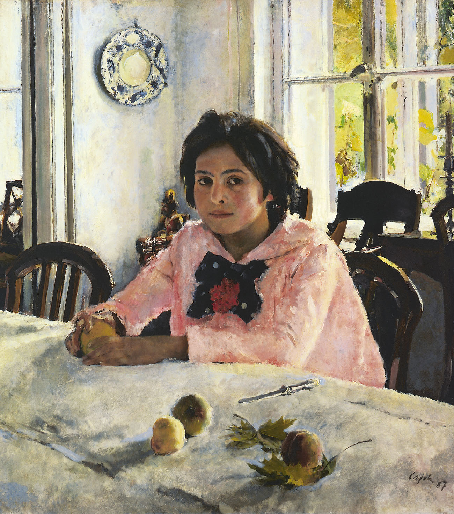
Miremos otra vez a la niña de Vrúbel, representada sobre el fondo de una alfombra turca. Es la representación de una niña significativa para él, que pertenecía al mismo círculo que Vera Mamóntova y Mika Morózov44. Pero solo que el mundo de Vrúbel era distinto del mundo de Serov. Serov veía al hombre como carácter, como estilo; Vrúbel veía cierta línea cósmico-trágica en cada hombre, veía en él aquella profundidad de sufrimiento anímico o espiritual con la que el hombre nace. Y por eso para él no existía en este sentido la edad: así pintaba a su hijo, así pintaba también a esta niña. Por eso el mundo de esta niña es igual de pleno, está igual de acabado, de terminado que el mundo de los niños en Serov, pero solo que está proyectado en la idea de una trágica condena interior.
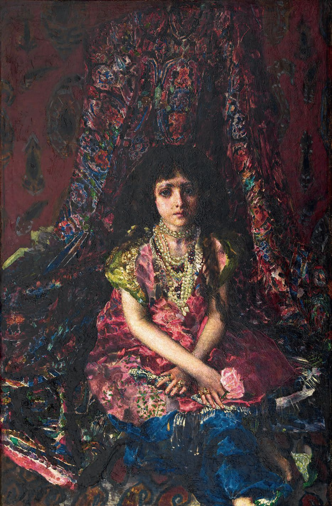
Pero el punto más alto en el desarrollo de este tema puede considerarse la obra de Nésterov «La visión del joven Bartolomé». No existe una representación más alta del niño en el arte. Esto se superpone a lo que se ha dicho más arriba: que nos relacionamos con indiferencia con los niños, que muchas veces no comprendemos que en la infancia ocurren los procesos principales, que sofocamos con indiferencia. Y el niño es tan frágil... Y he aquí ante nosotros la vida de Sergio de Rádonezh. ¿Sergio de Rádonezh fue un niño o no? Existe testimonio escrito de que Sergio de Rádonezh fue una persona histórica. No solo él mismo fijó el momento de la aparición ante él de un ángel en figura de monje, sino también el testimonio histórico al respecto es claro. Bartolomé era pastor45, y la revelación sobre su misión le fue dada a una edad muy temprana. Al jardín de infancia no fue, y por eso no había nadie que pudiera darle la posibilidad de olvidarlo.

Y Nésterov lo pinta de un modo muy interesante: pinta a Bartolomé muy frágil físicamente, tierno como una brizna de hierba, como una hierbecilla. Es una carne así de transparente, débil, muy enclenque. Y en esa transparencia, en esa debilidad, en esa endeblez del adolescente Sergio hay al mismo tiempo pensamiento sobre muchas cosas. Salta a la vista ante todo su fragilidad, su puerilidad, esa falta de formación física, esa falta de constitución física. Sergio de Rádonezh era un hombre de estatura enorme y bastante robusto, pero de adolescente era débil y enclenque. Es aún falta de creación: es como una hierbecilla, apenas está creciendo, pero esa fragilidad, esa ternura, ese crecimiento no atestiguan en absoluto debilidad, imperfección o inferioridad. Un niño gordo no significa un niño inteligente, aunque nuestro afán de alimentar según la balanza equivale para nosotros al concepto de salud, y el concepto de salud equivale al concepto de inteligencia o de desarrollo.
Nésterov muestra aquí un detalle muy sutil. Aquí hay una apertura extraordinaria que está vinculada a la formación. El adolescente aún se forma, aún está en crecimiento, está en movimiento, está abierto a todo, aún no está cerrado por todos lados. Además, en esa fragilidad de Bartolomé hay un tema muy importante para Nésterov. Lo hay en Vrúbel, lo hay en Serov, y en Nésterov también. Es el tema del hombre como personalidad. En Perov actúa el hombre como tipo social, igual que en Vigée-Lebrun, como tipo social. En Nésterov, en cambio, el hombre actúa como personalidad. Y la realización de esa personalidad según Nésterov es el ascetismo espiritual, la realización espiritual. ¿Cuándo ocurre esa realización espiritual? Lo mostró en una de sus obras más tempranas, en su obra más grande, «La visión del joven Bartolomé», donde todos esos nudos están vinculados a la representación de la edad infantil, del niño. Y esta obra es el punto más alto en la representación de la edad infantil en el arte, porque aquí el niño supera al hombre adulto. Es un sistema en el que el niño atrae hacia sí la función. La magnífica obra de Nésterov es la cima de la tendencia en la representación de los niños en la segunda mitad del siglo XIX. Y esta tendencia es bastante consecuente y unitaria.
Y por último, el último pintor al que hay que volver, analizando el problema del retrato infantil en el arte, es un pintor del siglo XX en el que el tema infantil aparece ontológicamente. En este pintor están proyectados todos los aspectos del tema. Habiendo mirado sus obras, podemos mirar también todo lo que dijo sobre los niños el arte de todo el mundo a lo largo de todo su desarrollo. Es la proyección universal del problema, y ese pintor es Pablo Picasso.
¿Por qué precisamente en la obra de Pablo Picasso los niños ocupan tal lugar? ¿Por qué la obra de Pablo Picasso es ontológica respecto al problema? ¿Por qué en ella están iluminados todos los enfoques del problema?
La obra de Pablo Picasso se divide en períodos: «azul», «rosa», «verde», cubista46, surrealista, de guerra, de posguerra... Sobre esto se escribe mucho. Pero toda la obra de Pablo Picasso está dedicada a dos problemas. Son problemas viejos como el mundo, son problemas españoles, pues él es español: la vida y la muerte. Y no hay ningún otro problema en su obra, de principio a fin. ¿Por qué ocurrió que existe confusión respecto a esta personalidad? ¿Y qué harían entonces los historiadores del arte? Cuántos libros hay que escribir: uno investiga el problema «Picasso y el cubismo», otro «Picasso y el surrealismo». Una vez se hartó terriblemente de que todos se le metieran, considerándolo surrealista, y dijo: «Sí, me considero surrealista, porque me casé con una mujer rusa47, y eso es la pasión de los surrealistas». Le gustaba hacer el payaso.
Si miramos de verdad lo que pinta, veremos que es la relación entre la vida y la muerte, el ser y la conciencia: los problemas más viejos y más profundos. Se proyectan en su obra, que puede traducirse al lenguaje del siglo XX. Son los problemas de la guerra y la paz, el problema de la desintegración, y precisamente los niños encarnan en sí el problema de la vida, del ser o del nacimiento. Por eso en él el tema infantil está representado en una cantidad tan enorme de variantes.
La cronología en este caso es completamente carente de sentido, así que vayamos simplemente de lo más alto a lo más bajo.
Picasso tiene un dibujo en el que está representado el tema de la madre y el niño. Es la variante clásica ideal: una mujer con un niño en brazos, sosteniendo al niño al pecho. Es decir, es el problema de la Madre de Dios, de la Virgen: un problema eterno, y él lo pinta en la variante clásica y lo resuelve precisamente como un problema eterno, lo resuelve como un problema de la naturaleza.
La madre aquí no es un principio espiritualmente activo, sino un principio físico, un principio natural. Es Gea, la diosa de la tierra, es la Campesina, es la Mujer, es la mitología del mundo, el hacer-mundo. Por eso está dada no solo grande, sino dada dormida, lo cual es muy importante. Está mostrada espiritualmente indiferente tanto al proceso del nacimiento como al proceso de la educación, de la lactancia. Su oficio es ser Pomona. En eso consiste su esencia: es Madre tierra, Gea, su tarea es dar hijos. Tiene la cabeza echada hacia atrás, los labios entreabiertos, y esa somnolencia, esa modorra espiritual: aquí no hay nada más que eso.
Y la segunda obra de Picasso va también en la dirección clásica de la mujer con el niño en brazos, de nuevo este tema de la Madonna, de la Virgen, de la Madre de Dios. Pero aquí este tema de la mujer con el niño en brazos está representado en el enfoque contrario, con otro signo. Es el tema del vínculo profundo, interior, espiritual. Es una atmósfera de ternura, de vínculo mutuo, no a través de la naturaleza física, sino a través de la naturaleza espiritual, es decir, a través de la familia, de la comunidad.
A la primera mujer ahora le quitas el niño, y ni se moverá: simplemente, igual, dormida, parirá al segundo y así sucesivamente. Ni siquiera abriría el ojo; su función es esa. Allí hay salud de lo primigenio, de lo primario. Y aquí hay otro aspecto de este tema: aquí es primario el vínculo espiritual, el vínculo interior. Otra cuestión interesante: ¿quién depende más de quién en esta unión, la madre del niño o el niño de la madre? En Picasso esta cuestión se resuelve a favor del niño: el niño es más fuerte que la madre. La madre depende del niño más que el niño de la madre, porque la madre se sujeta al niño, y no el niño a la madre. Él se agarra a la falda de la madre; si no hay falda, será la pata de la mesa. Y la madre al niño se agarra mucho: él es para ella el principio formador, él es para ella el ancla de salvación, él es la liberación de la soledad. En Picasso este tema es muy fuerte.
En la misma composición tiene también otra obra. Una mujer, exactamente igual con el hombro alzado, la cabeza echada, pero dentro, en la palma de la mano, sostiene un pajarito muy pequeño. Es decir, la soledad es tan fuerte, es tan insoportable, que al menos que haya algo en las manos, algún bultito tibio. Aunque sea así se palpará el latido del corazón: es ya un hilito que la une a la vida viva. Picasso es un maestro muy trágico; en él todo existe en conflicto trágico. No puede decirse que este tema sea aquí el principal, pero está aquí, igual que aquí está el momento de los vínculos básicos, de los vínculos espirituales. ¡Qué ternura tan asombrosa de las manos, qué delicadeza cuando sostiene con esas manos al niño! Cómo el niño la sostiene por la mejilla, cómo ella mira: toda ella está disuelta en él, toda ella está absorta en él... Si a la primera le quitas ahora el niño, ni se despertará; esta, en cambio, se dejaría cortar en pedazos. Todo su mundo espiritual está disuelto en el mundo del niño.
El tercer tema en Picasso está representado por multitud de obras. Está vinculado en él, por regla general, al tema de los músicos errantes, al tema de las gentes que vagan. Y aquí los niños juegan un papel completamente particular. La mayor cantidad de niños la tiene representada en obras sobre el tema de los músicos errantes, de los cómicos errantes.
El tema en sí, el tema del vagar, es tan serio, tan profundo, que no puede revelarse brevemente. Es un tema eterno, porque el tema del camino en el arte existe tanto como existe el propio arte. Es el tema de la búsqueda de la verdad, del camino, de la comprensión. En el siglo XX entra en el arte a través de Chaplin como tema de la soledad y del abandono en el camino, como tema de la búsqueda de la felicidad y, lo más importante, como tema de la gran ausencia de hogar. La ausencia de hogar del alma humana, simplemente la ausencia de hogar, el desplazamiento: uno de los temas más serios para el siglo XX.
En Picasso este tema puede considerarse a través de la clave chaplinesca; después fue recogido por Fellini en su película «La strada»48. Su heroína está arrojada a ese camino, a esa soledad. Allí hay un monólogo muy interesante, una enseñanza filosófica. Cuando la heroína dice que es una hoja arrastrada por el viento, que no le hace falta a nadie, el héroe le responde: somos necesarios en este mundo, y todo es necesario, e incluso esa piedra que yace en el camino, también es necesaria, tampoco carece de sentido. Y comprendemos en Fellini una cosa curiosa: ese forzudo que recogió a Gelsomina (y Gelsomina ni su propio nombre sabe, solo tiene apodo), ese hombre que rompe cadenas, fuerte, pero ella es más fuerte: es él quien depende de ella, y no ella de él.
Y estos problemas en los cómicos de Picasso están proyectados. Entran en el siglo XX en todo un complejo: es el tema de la soledad de la personalidad humana, de la búsqueda de sus caminos, de la búsqueda de la patria. La gran migración de los pueblos comienza antes de la Primera Guerra Mundial, y también antes de la Segunda Guerra Mundial y después de ella. Cuando comienza la emigración de la Alemania hitleriana, se produce toda una gran ola de desplazamientos. Es un proceso complejo que abarca el siglo XIX y el siglo XX. Y en Picasso los niños tienen una importancia muy grande en este problema.
Aquí se manifiesta claramente el tema que ya hemos mencionado: los niños, que son más fuertes que los adultos. He aquí un fragmento del cuadro: un payaso grande y gordo, uno de sus personajes principales, y un niño pequeño: actúan como en pareja. Usted comprende que en esa pareja el más fuerte no es el payaso viejo, sino el niño pequeño, no solo porque el número depende de él, sino porque el payaso habría perdido su vida si no fuera por la responsabilidad por ese niño.
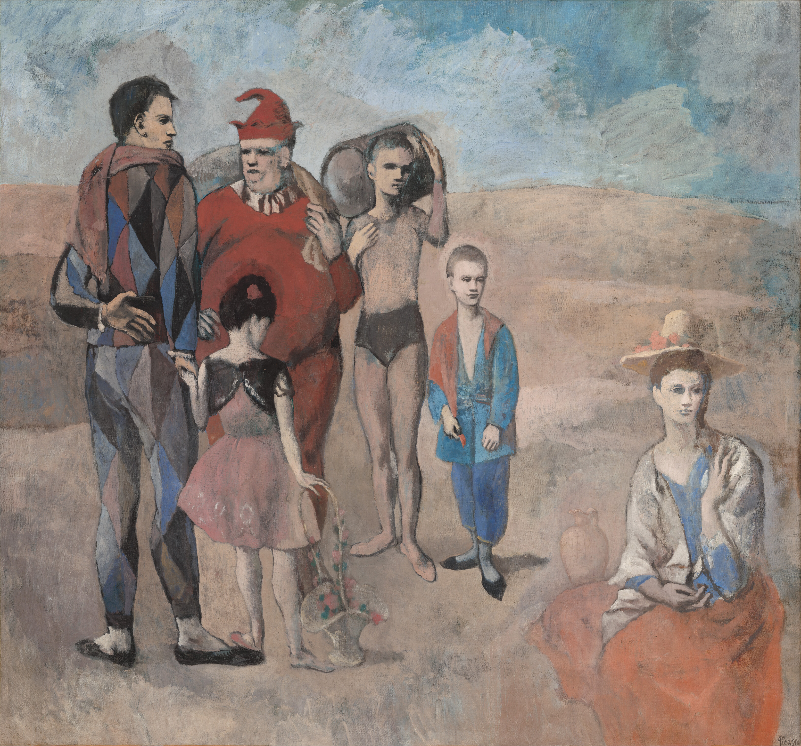
En Picasso es muy fuerte el motivo de la responsabilidad por el niño, que llevan los adultos. En los niños está contenido muchísimo. No solo es fuerza, es futuro. Y para Picasso es además el tema de la paz y la guerra. En él el tema de la paz y el tema del futuro, el tema de la supervivencia, se proyectan a través de los niños. Y este es otro aspecto del tema infantil.
Mirando a este payaso y a este niño, podríamos decir que en su representación el niño pertenece al hombre, y no a la mujer, si no fuera por aquellas obras sobre el tema de la maternidad de las que hablábamos más arriba. La cuestión es que él consideraba a través de los niños todas las variantes de vínculos. Repasa todas las variaciones familiares. En este caso no es una mujer, sino un hombre el que responde por el niño y lo sostiene sobre su hombro. Y al mismo tiempo en estos payasos y payasas está, por supuesto, aquello de lo que hemos hablado repetidas veces: los niños comparten la suerte social de los adultos, están unidos en un sistema social común. Los niños llevan sobre sí las mismas cargas sociales que los adultos, comparten su suerte, llevan autónomamente la carga de la vida espiritual. Y en la obra de Picasso pasa ante nosotros toda la historia de los niños en el arte.
En el ejemplo de Serov, del que hablábamos más arriba, veíamos que en el arte del siglo XIX el niño tiene su propio mundo interior autónomo. Y en Picasso hay toda una serie de obras vinculadas no solo a la representación de su propio hijo, sino en general a la representación de los niños. Esta serie en esencia se remonta a la segunda mitad del siglo XIX, cuando el niño comenzó a ser percibido como personalidad humana acabada. Es lo que hay en Chardin (acción de trabajo), lo que hay en Gainsborough (espíritu), lo que hay en Serov (cumplimiento). En Chardin el muchacho crece y hace pompas de jabón. En Picasso son niños muy tempranamente introducidos en la formación espiritual de la personalidad a través del proceso creador. Tiene toda una serie: la representación de niños en el proceso de creación o de niños con trajes de carnaval. Pero la mayoría de las veces son niños que dibujan o que leen.
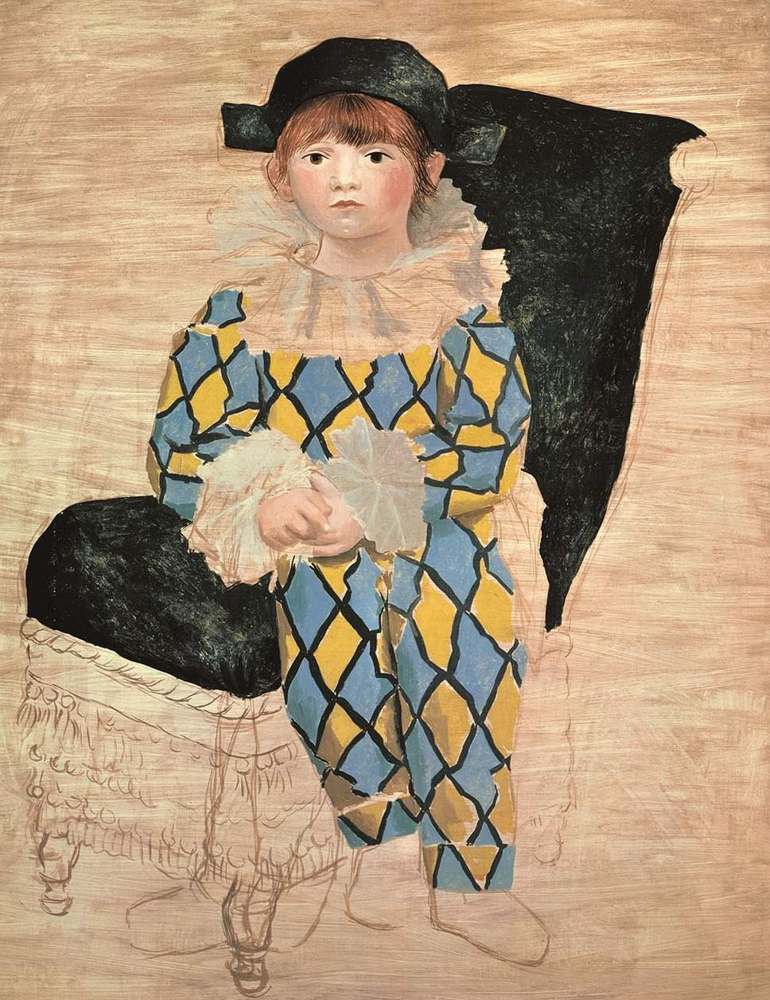
Y el último aspecto del problema: los niños como salvación del mundo. Este tema es análogo al tema de Nésterov, pero está representado en Picasso de un modo absolutamente concreto. Y aquí hay una explicación al hecho de que precisamente los niños ocupan un lugar tan importante en la obra de Picasso. En él aparecen como salvadores del mundo: solo los niños pueden amansar al gran monstruo. Su «Guernica» es una obra sin salida. En ella hay el concepto de la guerra, identificado con el concepto de la muerte: la muerte universal, la perdición de todo. No es solo la muerte humana, sino la muerte de la cultura, así como la desintegración de la materia. Y el tipo más terrible de muerte: el retorno del mundo del cronos, del tiempo, de la memoria, de la historia, al caos. «Guernica» es el retorno del mundo al caos. Gumiliov escribe qué es la muerte en el nivel atómico. Es la ley de la vida. La muerte da miedo no en el nivel atómico, da miedo en el nivel subatómico. Ese nivel subatómico de la muerte es la desintegración, el retorno del mundo al caos. Y el cronos es la luz, es el tiempo; y el tiempo es el orden; y el orden es la historia, la memoria. Por eso la «Guernica» de Picasso está dedicada en estado puro a este problema: muestra que el mundo puede, en ciertos juegos de niños grandes, de los niños de Brueghel, transformarse del cronos en el caos. Y él sigue desarrollando este mismo tema: las fuerzas del caos en él están personificadas a través de distintas imágenes. El caos está encarnado en la antiquísima imagen mitológica clásica europea del Minotauro, que devora a las personas. La cuestión es que el Minotauro es la fuerza fisiológica que domina a los hombres, privándolos de la razón. El Minotauro son las fuerzas elementales, pero también la fuerza de la devoración, la fuerza de la transformación del logos en caos. El Minotauro es el concepto de Lucifer, del abismo, de la desintegración y de la absorción en el nivel subatómico. Y solo un ser es capaz de detener esto: el niño con la vela en las manos, que es el portador de la luz.
Y he aquí que en una de las obras de Picasso vemos la representación de una niña y del Minotauro.49 A la izquierda, la niña con la lámpara, y a la derecha, el Minotauro. Es muy interesante cómo pinta a esa niña: la pinta como Caperucita Roja. Le da los rasgos de la imagen mitológica: Caperucita Roja y el Lobo Feroz. Solo que aquí en lugar del Lobo Feroz está el Minotauro. La niña lleva una boina con pompón. Tiene el cabello blanco, sostiene en una mano un ramo de flores y en la otra una vela. Y solo la figura infantil del niño se contrapone a todo el sistema del caos y de la desintegración. Este cuadro tiene un sentido ontológico extraordinariamente profundo. Hay aún otro fragmento: un hombre que sube por la escalera. Es el programa de la comprensión, porque la escalera desde tiempos inmemoriales significa la comprensión. Si no lo hay, no habrá ningún avance, habrá solo caos, el mundo volverá al abismo negro, la luz será absorbida por las tinieblas. En la desintegración en el nivel atómico hay retorno a un nuevo círculo, comienzo de otro ciclo. Pero en el nivel subatómico no ocurre nada. La salvación de la perdición está vinculada solo a una figura: a la figura del niño.

No hablemos ahora de las cualidades artísticas de este cuadro; simplemente intentemos ver que esta es la representación suprema del mundo, del niño, que muestra qué gran fuerza lleva en sí, de qué grandes posibilidades está cargado. Esto está revelado en el cuadro de Nésterov «La visión del joven Bartolomé». Y esto mismo nos muestra Picasso.
Notas del editor
1. No hemos podido identificar este libro. El medievalista Arón Gurévich escribió sobre la «Edda» y las sagas escandinavas («La Edda y la saga», 1979) y sobre las categorías de la cultura medieval, pero no se le conoce una monografía sobre el «Cantar de los nibelungos». Quizá la autora se refiere a otro estudio o cita de memoria.
2. El original ruso dice «hasta el umbral del siglo IV de nuestra era», un lapsus evidente que la traducción ya corrige. En rigor, Alejandro Magno (356–323 a. C.) pertenece a la segunda mitad del siglo IV a. C., no a su «umbral».
3. Este esquema de cuatro etapas no se corresponde con lo que sabemos de la educación griega. En Atenas, la «efebía» propiamente dicha era un servicio cívico-militar de dos años, a partir de los dieciocho, regulado sobre todo desde el siglo IV a. C. En los juegos panhelénicos no había categorías de edad tan precisas: se distinguía, según los certámenes, entre «niños» (paides), «imberbes» (ageneioi) y «hombres» (andres), y en Olimpia competían también adultos.
4. No conocemos ninguna fuente antigua que hable de «polvo de plata» en el pelo de los efebos. Sí está documentada la costumbre atlética de untarse el cuerpo con aceite y espolvorearse con arena fina o polvo.
5. Se trata del Auriga de Delfos (h. 478–474 a. C.), hallado en 1896. No es un «vencedor» en sentido estricto: la victoria en la carrera de carros se atribuía al propietario del tiro, en este caso probablemente Polízalo, tirano de Gela, que dedicó el grupo. El auriga era el conductor. La edad de «catorce años» es una apreciación de la autora; la estatua suele describirse como la de un joven adulto.
6. No hemos localizado esta frase en la obra de Aristóteles. Parece una paráfrasis libre de la autora. Aristóteles sí afirma, por ejemplo en la «Política», que el niño es un ser «incompleto» y que su virtud se mide en relación con el adulto.
7. Higía era la personificación de la salud, hija de Asclepio (en algunas tradiciones, su esposa). No era una diosa específica de la infancia ni de la pediatría. La escultura helenística de niños —el «Niño de la oca» de Boeto, por ejemplo— no está ligada especialmente a su culto.
8. El iconostasio alto, con varios órdenes de iconos, es una creación rusa de finales del siglo XIV y comienzos del XV (Teófanes el Griego, Rubliov). En el siglo IX solo existía la barrera baja del templo (templon), a veces con iconos.
9. En la «Divina comedia», Virgilio guía a Dante por el Infierno y el Purgatorio, y Beatriz lo conduce por el Paraíso. El ruso dice «в светскую жизнь», «a la vida mundana», lo que parece un lapsus de la autora por «a la vida celestial».
10. La «Madonna Sixtina» se data en 1513–1514; Rafael murió en 1520. Los personajes laterales son el papa Sixto II y santa Bárbara.
11. Las dos escenas que la autora comenta pertenecen al Retablo de Isenheim (1512–1516, Musée Unterlinden, Colmar): la «Anunciación» y el panel del «Concierto de ángeles y Natividad», donde junto a la Virgen aparecen la tina de baño y el orinal.
12. La «Madonna en el verde» es la «Virgen del prado» (1505–1506, Kunsthistorisches Museum, Viena), en la que el Niño agarra la cruz que le ofrece el pequeño san Juan. Es la que se describe a continuación. La «Madonna Alba» (h. 1510) está en la National Gallery of Art de Washington y no se reproduce aquí.
13. «Madonna Benois» o «Virgen de la flor» (1478–1480, Museo del Ermitage). La autora la cita más adelante con este segundo título. La afirmación de que Leonardo «escribió tratados de psicología» no es exacta: sus notas sobre la expresión de las pasiones y el movimiento del cuerpo se reunieron después en el «Tratado de la pintura».
14. «La Virgen de las cerezas» (h. 1516–1518, Kunsthistorisches Museum, Viena) no es una «Sagrada Familia» en sentido estricto: junto a la Virgen y el Niño aparecen san José, Zacarías y el pequeño san Juan, que es el que lleva la crucecita.
15. No es seguro a qué cuadro se refiere la autora; por eso no se reproduce. El Greco pintó varias versiones de la Sagrada Familia, con santa Ana y con el pequeño san Juan (Hospital de Tavera, Toledo; Museo del Prado; Museo de Santa Cruz, Toledo). En ellas no aparece san Joaquín, sino san José.
16. No se conoce ningún cuadro de Tiziano con Pietro Aretino, su hija y su nieto. Tiziano retrató varias veces a Aretino (Palazzo Pitti, Florencia; Frick Collection, Nueva York). Quizá la autora piensa en un retrato de grupo familiar como «La familia Vendramin» (National Gallery, Londres). Tampoco consta que Aretino fuera «soldado fugitivo y presidiario». Hijo de un zapatero de Arezzo, se hizo temido por sus escritos satíricos y recibió pensiones de Carlos V y de Francisco I.
17. En las «Adoraciones de los pastores» tardías de El Greco (por ejemplo, la del Museo del Prado, 1612–1614, pintada para su propia tumba) la luz emana del cuerpo del Niño.
18. Tommaso Portinari dirigía la sucursal del Banco Medici en Brujas. El tríptico (h. 1475–1476) se envió a Florencia, a la iglesia de Sant’Egidio, y hoy está en los Uffizi. En la tabla izquierda aparecen Tommaso y sus dos hijos varones con san Antonio Abad y santo Tomás; en la derecha, su esposa Maria Baroncelli y su hija con santa Margarita y santa María Magdalena.
19. «Juegos de niños» (1560, Kunsthistorisches Museum, Viena) y «Los proverbios flamencos» (1559, Gemäldegalerie, Berlín) no forman un díptico. Son obras independientes, aunque próximas en fecha y concepción: vistas desde lo alto con decenas de escenas simultáneas. En los «Juegos de niños» se han identificado más de ochenta juegos.
20. Apollinaire no fue fundador de Dadá, que nació en Zúrich en 1916 en torno a Hugo Ball, Tristan Tzara, Marcel Janco, Hans Arp y Richard Huelsenbeck. Las ideas que la autora atribuye al manifiesto de Tzara (1918) son una paráfrasis muy libre; no hemos encontrado en él la referencia a la intelligentsia inglesa.
21. Brueghel era brabanzón y trabajó en Amberes y Bruselas, en los Países Bajos meridionales. Sería más exacto hablar de la intelectualidad flamenca o neerlandesa.
22. Solo se conserva un autorretrato infantil de Durero: el dibujo a punta de plata de 1484, cuando tenía trece años (Albertina, Viena).
23. Es una hipótesis, no un hecho demostrado. La han defendido varios estudiosos, entre ellos David Alan Brown, y no hay documentos que la confirmen.
24. Benvenuto Cellini (1500–1571) nació cuando Verrocchio ya había muerto (1488), así que no es contemporáneo del «David». Las pendencias y homicidios que menciona la autora proceden de su autobiografía, la «Vida».
25. No es un fresco, sino un óleo sobre lienzo (1534–1538), pintado para la Sala dell’Albergo de la Scuola Grande della Carità, que hoy forma parte de las Gallerie dell’Accademia de Venecia, donde sigue en su lugar original.
26. Vladímir Chivilijin, «Memoria» («Память», 1982), novela-ensayo de tono nacionalista sobre la historia rusa.
27. No hemos podido localizar esta idea en «El jardín de Epicuro» (1894).
28. En el cuadro no interviene ningún inquisidor: el alma del conde, como un niño envuelto en un velo, la lleva un ángel hacia lo alto, donde interceden la Virgen y san Juan Bautista ante Cristo. Véase el capítulo 16.
29. El microscopio compuesto se atribuye a los ópticos holandeses de finales del siglo XVI (Zacharias Janssen, h. 1590). Antonie van Leeuwenhoek hizo sus observaciones con microscopios de una sola lente a partir de la década de 1670.
30. Baltasar Carlos nació en octubre de 1629, así que en el retrato de Boston (1631) tenía algo más de un año. Lleva la banda y la bengala (el bastón de mando) de capitán general, y sobre el cojín hay un sombrero de plumas, no un «casco de mariscal». No se sabe quién es el enano ni que fuera su educador.
31. Diego de Acedo, llamado «el Primo», trabajaba en la Secretaría de Cámara, en el oficio de la estampilla, pero no fue «secretario personal» del rey. En «Las Meninas», la enana Mari Bárbola no era la educadora de la infanta ni lleva condecoración alguna: la cruz de Santiago la lleva el propio Velázquez en su autorretrato.
32. Margarita Teresa (1651–1673) murió a los veintiún años, tras varios partos, probablemente por complicaciones del último. La endogamia de los Austrias es un hecho, pero atribuirle una «muerte por anemia» es una simplificación. La autora no especifica cuál de los retratos de la infanta comenta. Por los detalles (pañuelo en una mano, ramo en la otra, cadena de oro en bandolera), el pie de imagen se deja genérico.
33. Rembrandt pintó varias Sagradas Familias. La del Ermitage (1645), con ángeles que descienden sobre la cuna, es la más conocida en Rusia y la que se reproduce.
34. Hans Holbein el Joven, que trabajó en Inglaterra en 1526–1528 y de 1532 a su muerte en 1543. Retrató, entre otros, al arzobispo de Canterbury William Warham (1527) y a Enrique VIII.
35. «Oración antes de la comida» es el cuadro conocido en español como «La bendición de la mesa». El original es de 1740 y está en el Museo del Louvre; el Ermitage posee una réplica autógrafa de 1744. Se mantienen en el pie los datos del índice de láminas del libro.
36. El título habitual es «El castillo de naipes» (h. 1736–1737; hay versiones en el Louvre, la National Gallery de Londres y la de Washington). En ellas el muchacho no juega «a los soldaditos», sino que construye un castillo con los naipes. En el cajón abierto asoman más cartas.
37. Gainsborough pintó muchas veces a sus hijas, Mary y Margaret. Solo Mary se casó (1780), con el oboísta Johann Christian Fischer, en un matrimonio que duró poco. Margaret no se casó nunca.
38. Élisabeth Vigée-Lebrun (1755–1842) no fue discípula de David ni pertenecía a su escuela. Se formó casi sola, con consejos de Gabriel Briard, Joseph Vernet y Jean-Baptiste Greuze, y fue pintora de María Antonieta. Durante la Revolución emigró por su filiación monárquica, mientras que David era jacobino. Tampoco era aristócrata de nacimiento: era hija del pastelista Louis Vigée.
39. El autorretrato de Vigée-Lebrun con su hija es de 1786, y «La despedida del difunto» de Perov, de 1865: casi ochenta años de diferencia.
40. Pável Tretiakov empezó su colección en 1856 y la donó a la ciudad de Moscú en 1892. El Ermitage imperial estaba abierto al público, con restricciones, desde 1852, con la inauguración del Nuevo Ermitage.
41. El cuadro de Delacroix es de 1830 y «Los miserables» de Victor Hugo, de 1862. No es el muchacho del cuadro quien procede de Gavroche, sino que es el personaje de Hugo el que suele considerarse inspirado, en parte, en él.
42. Mijaíl Mijáilovich Morózov (1897–1952), retratado por Serov en 1901 a los cuatro años, fue en efecto un destacado shakespearista y traductor.
43. Vera Mámontova nació en 1875; en 1887, cuando Serov la pintó en Abrámtsevo, tenía once años, casi doce, no «15 o 14». Serov la retrató también en dibujos posteriores.
44. La «Niña sobre fondo de alfombra persa» (1886, Museo Nacional de Arte, Kiev) la pintó Vrúbel en Kiev, antes de entrar en el círculo de Mámontov. La modelo, Masha Dajnóvich, era hija de un prestamista kievita. La alfombra es persa, no turca.
45. Según la «Vida» de san Sergio escrita por Epifanio el Sabio, el niño Bartolomé había sido enviado a buscar los caballos de su padre cuando se le apareció el anciano monje. Por lo demás, el que dejó constancia del episodio fue su hagiógrafo, no el propio Sergio.
46. La historiografía no habla de un período «verde» en Picasso. Tras los períodos azul (1901–1904) y rosa (1904–1906) vienen el protocubismo o «período africano» y el cubismo.
47. Picasso se casó en 1918 con la bailarina Olga Jojlova, de los Ballets Rusos de Diáguilev. No hemos podido documentar la frase que cita la autora.
48. En «La strada» (1954), el discurso del guijarro («todo lo que hay en el mundo sirve para algo») se lo dirige a Gelsomina el Loco (Il Matto), el equilibrista, no el forzudo Zampanò. Gelsomina sí tiene nombre propio. Lo del «apodo» procede del texto ruso, que la llama «Морковка» («Zanahoria»), mote con el que la conoció el público soviético; la traducción española restituye el nombre original.
49. Se trata de la «Minotauromaquia» (1935), aguafuerte y buril, una de las estampas más importantes de Picasso. La reproducción que se incluye es una de sus pruebas.